<!doctype html>
<html lang="en">
<head>
  <meta charset="utf-8">
  <meta name="viewport" content="width=device-width, initial-scale=1">
  <title>arxiv digest — 2026-07-15</title>
  <style>
:root {
  --bg: #ffffff;
  --fg: #1f2328;
  --muted: #59636e;
  --border: #d0d7de;
  --card: #f6f8fa;
  --link: #0969da;
}
body {
  max-width: 980px;
  margin: 0 auto;
  padding: 2rem 1rem 5rem;
  font-family: -apple-system, BlinkMacSystemFont, "Segoe UI", Helvetica, Arial, sans-serif;
  line-height: 1.55;
  color: var(--fg);
  background: var(--bg);
}
a { color: var(--link); }
img { max-width: 100%; height: auto; }
pre, code { background: var(--card); border-radius: 6px; }
pre { padding: 1rem; overflow-x: auto; }
blockquote { border-left: 4px solid var(--border); padding-left: 1rem; color: var(--muted); }
details { margin: 0.6rem 0; }
summary { cursor: pointer; font-weight: 600; }
.paper-figures-scroll {
  display: flex;
  gap: 1rem;
  overflow-x: auto;
  overscroll-behavior-x: contain;
  padding: 0.75rem 0.25rem 1rem;
  margin: 1rem 0 1.25rem;
  border-top: 1px solid var(--border);
  border-bottom: 1px solid var(--border);
  scroll-snap-type: x proximity;
}
.paper-figure-card {
  flex: 0 0 min(260px, 72vw);
  scroll-snap-align: start;
  background: var(--card);
  border: 1px solid var(--border);
  border-radius: 12px;
  padding: 0.55rem;
}
.paper-figure-card img {
  display: block;
  width: 100%;
  max-height: 240px;
  object-fit: contain;
  background: white;
  border-radius: 8px;
}
.paper-figure-caption {
  display: block;
  margin-top: 0.5rem;
  color: var(--muted);
  font-size: 0.85rem;
}
.figure-strip-hint {
  color: var(--muted);
  font-size: 0.9rem;
  margin-bottom: -0.3rem;
}
</style>
  <!-- MathJax: renders $...$ inline math and $$...$$ display math, plus
       \(...\) and \[...\]. Loaded from the official CDN; works offline
       once cached. Configured to skip code/pre blocks so arxiv IDs that
       look like dollar amounts don't get mangled. -->
  <script>
    window.MathJax = {
      tex: {
        inlineMath: [['$', '$'], ['\\(', '\\)']],
        displayMath: [['$$', '$$'], ['\\[', '\\]']],
        processEscapes: true,
        processEnvironments: true
      },
      options: {
        skipHtmlTags: ['script', 'noscript', 'style', 'textarea', 'pre', 'code'],
        ignoreHtmlClass: 'tex2jax_ignore',
        processHtmlClass: 'tex2jax_process'
      }
    };
  </script>
  <script id="MathJax-script" async
    src="https://cdn.jsdelivr.net/npm/mathjax@3/es5/tex-chtml.js"></script>
</head>
<body>
<header style="background-color: #333; color: white; padding: 15px; margin-bottom: 20px;">
  <h1 style="margin: 0; font-size: 24px;">
    <a href="https://ochelpan.github.io/arXiv_clean/" style="color: white; text-decoration: none;">Main</a>
  </h1>
</header>

<h1>Daily arXiv Report</h1>

<hr>
<p>
<a href="index.html">← Index</a>
 · <a href="papers_02.html">Next →</a>
</p>
<hr>

<h2>Papers 1–20</h2>
<p><a id="paper-2607.11662"></a></p>
<h3 id="emergent-quantum-chaos-from-correlations-on-a-random-graph">⭐ <a href="http://arxiv.org/abs/2607.11662v1">Emergent quantum chaos from correlations on a random graph</a></h3>
<p><strong>Highlighted author(s):</strong> Nicolò Defenu<br>
<strong>Authors:</strong> Mrinal Sarkar, Valerio Pagni, Tilman Enss, Nicolò Defenu<br>
<strong>Type:</strong> theory · <strong>Category:</strong> disordered systems and neural networks · <strong>PDF:</strong> <a href="https://arxiv.org/pdf/2607.11662v1">https://arxiv.org/pdf/2607.11662v1</a><br>
<strong>Analysis basis:</strong> full PDF text, analyzed in chunks
<strong>Topic relevance:</strong> <code>Keldysh / 2PI / non-Gaussian methods</code> <strong>3/5</strong> · <code>analog quantum simulation</code> <strong>1/5</strong> · <code>driven-dissipative phase transition</code> <strong>1/5</strong> · <code>methods for driven-dissipative</code> <strong>1/5</strong> · <code>non-equilibrium universality</code> <strong>1/5</strong></p>
<div class="figure-strip-hint">↔ Scroll figures horizontally</div>
<div class="paper-figures-scroll">
<figure class="paper-figure-card">
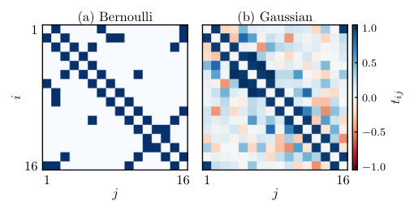
<figcaption class="paper-figure-caption"><b>Fig 1.</b> FIG. 1. Hopping matrices for a typical disorder realization of the 1DLR3 graph with L = 16 sites and σ = 0.6. (a) Bernoulli disorder: Each off-diagonal element tij is 1 (Blue) with probability pij = d−(1+σ) ij and 0 (White) otherwise, yield- ing a sparse binary matrix. (b) Gaussian truncation: The matrix elements tij are replaced by a Gaussian with the same mean pij and variance pij(1 −pij), truncating at the second cumulant of the Bernoulli distribution. The resulting hopping matrix is dense and continuously distributed.</figcaption>
</figure>
<figure class="paper-figure-card">
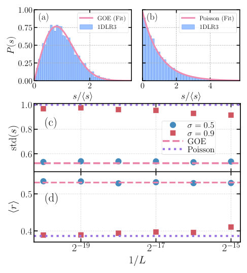
<figcaption class="paper-figure-caption"><b>Fig 2.</b> FIG. 2. Eigenvalue statistics for σ = 0.5 [panels(a), (c), (d)] and σ = 0.9 [panels (b), (c) and (d)]. Panels (a) and (b) show the level-spacing distribution P(s) for L = 220. In panel (a) (σ = 0.5), P(s) follows the Wigner surmise for the Gaus- sian Orthogonal Ensemble (GOE); a fit to f(s) = 2 B s e−Bs2</figcaption>
</figure>
<figure class="paper-figure-card">
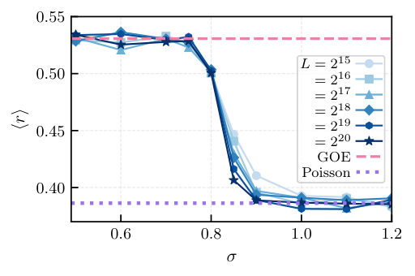
<figcaption class="paper-figure-caption"><b>Fig 3.</b> FIG. 4. Mean gap ratio ⟨r⟩as a function of σ for L = 215 to 220. The curves cross over from the GOE value ⟨r⟩GOE ≈ 0.5307 at small σ to the Poisson value ⟨r⟩P ≈0.3863 at large σ, indicating an ergodic-to-localization transition be- tween σ = 0.80 and 0.85.</figcaption>
</figure>
<figure class="paper-figure-card">
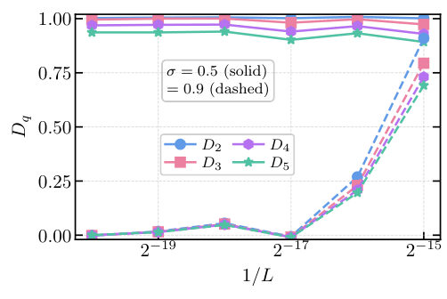
<figcaption class="paper-figure-caption"><b>Fig 4.</b> FIG. 3. Scaling of the fractal dimensions Dq for q = 2, 3, 4, 5 with inverse system size 1/L. Solid lines show results for σ = 0.5, where Dq tends to approach unity as L →∞, con- sistent with the GOE-like level statistics observed in Fig. 2, yielding an existence of ergodic phase. Dashed lines show re- sults for σ = 0.9, where Dq extrapolates to zero in the thermo- dynamic limit, confirming localization consistently with the level statistics.</figcaption>
</figure>
</div>

<p><strong>Summary.</strong> The paper studies quantum chaotic behavior in 1D lattices with sparse, long-range random bonds. It numerically demonstrates an ergodic-to-localized transition at a critical bond disorder strength $\sigma_c$. Theoretically, it develops and analyzes a nonlinear sigma model, showing that capturing the full non-Gaussian nature of the disorder is crucial for accurately predicting this transition.</p>
<p><strong>Why it may be interesting.</strong> This work provides a detailed theoretical framework for understanding how structural disorder alone can induce quantum chaos and localization, offering insights into universality classes distinct from standard Anderson models relevant to disordered quantum materials.</p>
<details>
<summary>Detailed structure</summary>
<p><strong>Main problem.</strong> The work investigates quantum chaos and localization transitions driven purely by geometric disorder (connectivity) rather than additive potential disorder.</p>
<p><strong>Main result.</strong> A transition from ergodic/chaotic spectral correlations (GOE statistics) to localized states (Poisson statistics) is found at a critical exponent $\sigma_c$ significantly higher than naive theoretical predictions, suggesting the importance of higher-order correlation functions.</p>
<p><strong>Method.</strong> The analysis combines numerical diagonalization and spectral statistics with advanced field theory techniques, specifically deriving and analyzing a nonlinear sigma model for the disorder-averaged Green's function.</p>
<p><strong>Model / system.</strong> The system is a one-dimensional ring lattice where hopping bonds are added independently based on a probability $p_{ij} \propto d^{-(1+\sigma)}$, creating a sparse random graph structure. The Hamiltonian is non-interacting and purely geometric in its disorder.</p>
<p><strong>Key observables.</strong> Nearest-neighbor level spacing distribution $P(s)$, consecutive-gap ratio $\langle r 
angle$, fractal dimension scaling $D_q$, and the effective action coefficient $\Pi(0) - \Pi(q)$.</p>
<p><strong>Important parameters / regimes.</strong> The disorder exponent $\sigma$ controls connectivity; the transition occurs in the range $0.80 \lesssim \sigma_c \lesssim 0.85$.</p>
<p><strong>Assumptions / limitations.</strong> Field theory derivations rely on approximations like small-momentum expansions and retaining only up to second cumulants, which are shown to be insufficient for determining the true critical point.</p>
<p><strong>Figures summary.</strong> Figures compare level spacing distributions ($P(s)$) showing crossover from GOE ($\sigma=0.5$) to Poisson ($\sigma=0.9$), and show fractal dimension scaling $D_q$ confirming ergodic vs. localized regimes.</p>
<p><strong>Paper structure.</strong> The paper progresses from numerical evidence of the transition using spectral statistics, to developing a field-theoretic description via the nonlinear sigma model, culminating in deriving the leading nonanalytic contribution $\Pi(0) - \Pi(q)$ based on scaling arguments.</p>
</details>
<details>
<summary>Abstract</summary>
<p>This work demonstrates that sparse long-range random bonds on a one-dimensional lattice alone can generate quantum-chaotic spectral correlations and also drive a localization transition in a noninteracting single-particle Hamiltonian. The model is a one-dimensional ring in which each pair of sites is connected independently with a probability $p_{ij}= d_{ij}^{-(1+σ)}$. Each bond carries identical unit hopping and on-site disorder is absent. Despite the absence of on-site disorder and interaction, the model displays quantum chaotic spectra with Gaussian orthogonal ensemble (GOE) level statistics at small $σ$ and localized eigenstates with Poisson statistics at larger $σ$. The transition occurs in the range $ 0.80 \lesssim σ_c \lesssim 0.85$, far above the summability threshold of the mean hopping profile ($σ=0$). A Gaussian field theory retaining only the mean and variance of the Bernoulli bonds instead predicts a threshold at $σ=1$, suggesting that higher cumulants are infrared-relevant. Our findings hint towards a universality class that is distinct from both the power-law random banded matrix model and the standard Anderson transition.</p>
</details>
<p><sub><a href="#top">↑ back to top</a></sub></p>

<p><a id="paper-2607.11201"></a></p>
<h3 id="dynamics-of-two-interacting-dipolar-two-level-systems-in-a-multi-mode-electromagnetic-cavity-sudden-death-and-revival-of-the-concurrence-within-the-born-markov-approximation"><a href="http://arxiv.org/abs/2607.11201v1">Dynamics of two interacting dipolar two-level systems in a multi-mode electromagnetic cavity: sudden death and revival of the concurrence within the Born-Markov approximation</a></h3>
<p><strong>Authors:</strong> Loann Quien, Naomichi Hatano<br>
<strong>Type:</strong> theory · <strong>Category:</strong> other · <strong>PDF:</strong> <a href="https://arxiv.org/pdf/2607.11201v1">https://arxiv.org/pdf/2607.11201v1</a><br>
<strong>Analysis basis:</strong> full PDF text, analyzed in chunks
<strong>Topic relevance:</strong> 🔥 <code>entanglement &amp; information structure</code> <strong>5/5</strong> · 🔥 <code>analog quantum simulation</code> <strong>4/5</strong> · 🔥 <code>correlated / nonlocal dissipation</code> <strong>4/5</strong> · 🔥 <code>exotic spin models in light-matter</code> <strong>4/5</strong> · <code>Tavis-Cummings &amp; cavity-many-emitter</code> <strong>3/5</strong> · <code>correlated cavity matter</code> <strong>3/5</strong> · <code>methods for driven-dissipative</code> <strong>3/5</strong> · <code>spintronics-quantum-optics interface</code> <strong>3/5</strong> · <code>driven-dissipative phase transition</code> <strong>2/5</strong> · <code>non-equilibrium dynamics</code> <strong>2/5</strong> · <code>Dicke superradiance</code> <strong>1/5</strong> · <code>Keldysh / 2PI / non-Gaussian methods</code> <strong>1/5</strong> · <code>Rydberg arrays</code> <strong>1/5</strong> · <code>non-equilibrium universality</code> <strong>1/5</strong></p>
<div class="figure-strip-hint">↔ Scroll figures horizontally</div>
<div class="paper-figures-scroll">
<figure class="paper-figure-card">
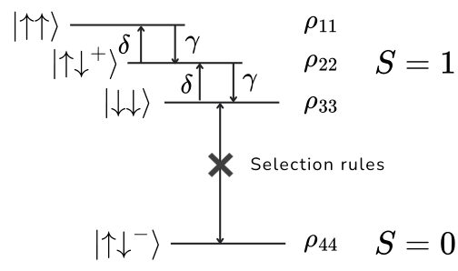
<figcaption class="paper-figure-caption"><b>Fig 1.</b> Figure 1: Energy levels of the system and transitions.</figcaption>
</figure>
<figure class="paper-figure-card">
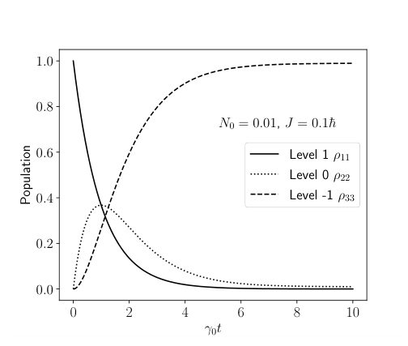
<figcaption class="paper-figure-caption"><b>Fig 2.</b> Figure 2: Dynamics of the diagonal terms of the triplet states.</figcaption>
</figure>
<figure class="paper-figure-card">
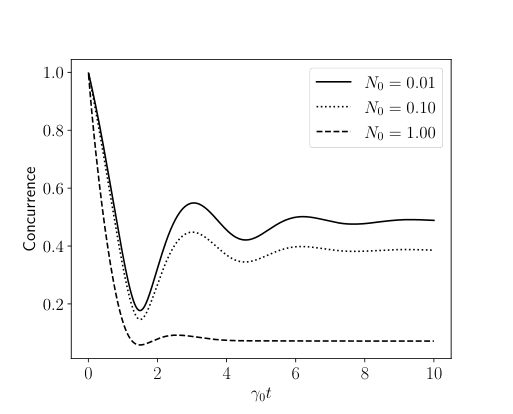
<figcaption class="paper-figure-caption"><b>Fig 3.</b> Figure 3: Time dependence of the concurrence for the initial state ρ(0) = |χ⟩⟨χ|.</figcaption>
</figure>
<figure class="paper-figure-card">
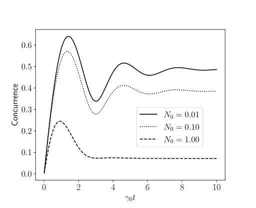
<figcaption class="paper-figure-caption"><b>Fig 4.</b> Figure 5: Time dependence of the concurrence for the initial state ρ(0) = |ϕψ⟩⟨ϕψ|.</figcaption>
</figure>
<figure class="paper-figure-card">
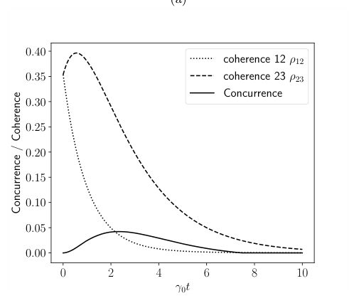
<figcaption class="paper-figure-caption"><b>Fig 5.</b> Figure 4: (a) Time dependence of the concurrence for the initial state ρ(0) = |ϕϕ⟩⟨ϕϕ|. (b) Off-diagonal coherence between levels 1-0 and 0-(−1) with N0 = 0.01.</figcaption>
</figure>
</div>

<p><strong>Summary.</strong> This theoretical paper analyzes the entanglement dynamics of two interacting dipolar spins coupled to an electromagnetic cavity using the Born-Markov approximation. The authors derive the master equation governing the system's evolution, revealing that concurrence undergoes characteristic sudden death and revival cycles. This work provides detailed insights into how environmental coupling affects quantum correlations in solid-state or atomic spin systems.</p>
<p><strong>Why it may be interesting.</strong> This work is highly relevant as it combines cavity QED principles with open quantum system dynamics to predict non-trivial entanglement behavior (death/revival), which is a key topic in quantum information and AMO physics.</p>
<details>
<summary>Detailed structure</summary>
<p><strong>Main problem.</strong> The study investigates the quantum dynamics of two interacting dipolar two-level systems coupled to a multi-mode electromagnetic cavity, specifically focusing on entanglement decay.</p>
<p><strong>Main result.</strong> The authors demonstrate that even within the Born-Markov approximation, the concurrence between the two spins exhibits characteristic sudden death and revival phenomena. They also derive analytical expressions for stationary concurrence under different coupling models (XXX vs XXZ).</p>
<p><strong>Method.</strong> The dynamics are analyzed using the Gorini–Kossakowski–Sudarshan–Lindblad (GKSL) master equation, solved by diagonalizing system matrices derived from the coupled Hamiltonian.</p>
<p><strong>Model / system.</strong> The model consists of two $1/2$-spins interacting via an antiferromagnetic Heisenberg coupling ($J \vec{S}_1 \cdot \vec{S}_2$) and coupled to a multi-mode electromagnetic cavity field. The system is treated using the Born-Markov approximation.</p>
<p><strong>Key observables.</strong> Concurrence, density matrix elements ($
ho_{ii}, 
ho_{ij}$), spin relaxation time, and coherence decay time.</p>
<p><strong>Important parameters / regimes.</strong> Temperature (thermal equilibrium $
ho_B$), coupling strengths ($g, J$), and the nature of the exchange interaction (XXX vs. XXZ).</p>
<p><strong>Assumptions / limitations.</strong> The Born-Markov approximation is employed throughout the analysis; for some couplings, the Rotating Wave Approximation (RWA) is also applied.</p>
<p><strong>Figures summary.</strong> Figures illustrate the time evolution of concurrence showing death and revival behavior for different coupling parameters ($W^+$ vs. $r$), and compare delay/death times at zero temperature.</p>
<p><strong>Paper structure.</strong> The paper first establishes the equivalence between single-spin dynamics and a two-level atom in the dipole approximation. It then derives the GKSL equation for two interacting spins, solving for populations and coherences via matrix diagonalization. Finally, it extends the analysis to different coupling forms (like XXZ) to characterize stationary entanglement.</p>
</details>
<details>
<summary>Abstract</summary>
<p>Interacting dipolar two-level systems form a special class of qubits that interact with a cavity in a particular way. We first prove that the Markovian dynamics of one 1/2-spin in interaction with a quantised magnetic field from a multi-mode cavity at thermal equilibrium is equivalent to a two-level atom interacting in the dipole approximation with the electric field of the cavity. We then use the Born-Markov approximation to study the dynamics of two spins interacting through the antiferromagnetic Heisenberg coupling in the same environment. We find the exact expression of the density matrix of the system, with the off-diagonal coherence decay time and spin relaxation time. The concurrence for the stationary state is explicitly derived for any kind of initial state and the role of the singlet state is brought to light. The temporal evolution of the concurrence is numerically computed for different initial states, the phenomenon of sudden death and revival is observed even within the Born-Markov approximation, and an analysis of its behaviour is conducted for Werner states. We finally derive the equations and the stationary concurrence for the XXZ coupling.</p>
</details>
<p><sub><a href="#top">↑ back to top</a></sub></p>

<p><a id="paper-2607.11494"></a></p>
<h3 id="a-diode-nanocavity-for-fast-efficient-and-tunable-emission-of-highly-entangled-photon-pairs-and-fourier-transform-limited-single-photons"><a href="http://arxiv.org/abs/2607.11494v1">A diode nanocavity for fast, efficient and tunable emission of highly entangled photon pairs and Fourier-transform-limited single photons</a></h3>
<p><strong>Authors:</strong> Ievgen Brytavskyi, Thomas Oberleitner, Christian Weidinger, Maximilian Aigner, Gabriel Undeutsch, Tobias Steindl, Johannes Reindl, Ailton Garcia, Melina Peter, Christian Schimpf, Santanu Manna, Michele B. Rota, Quirin Buchinger, Sven Höfling, Tobias Huber-Loyola, Rinaldo Trotta, Tobias M. Krieger, Eva Schöll, Armando Rastelli<br>
<strong>Type:</strong> experiment · <strong>Category:</strong> quantum information and computing · <strong>PDF:</strong> <a href="https://arxiv.org/pdf/2607.11494v1">https://arxiv.org/pdf/2607.11494v1</a><br>
<strong>Analysis basis:</strong> full PDF text, analyzed in chunks
<strong>Topic relevance:</strong> 🔥 <code>quantum optics experiment</code> <strong>5/5</strong> · 🔥 <code>QC/QI experiment</code> <strong>4/5</strong> · <code>Tavis-Cummings &amp; cavity-many-emitter</code> <strong>3/5</strong> · <code>correlated cavity matter</code> <strong>3/5</strong> · <code>interference shaping light</code> <strong>3/5</strong> · <code>correlated / nonlocal dissipation</code> <strong>2/5</strong> · <code>driven-dissipative phase transition</code> <strong>2/5</strong> · <code>entanglement &amp; information structure</code> <strong>2/5</strong> · <code>analog quantum simulation</code> <strong>1/5</strong> · <code>methods for driven-dissipative</code> <strong>1/5</strong> · <code>non-equilibrium dynamics</code> <strong>1/5</strong> · <code>non-equilibrium universality</code> <strong>1/5</strong> · <code>quantum measurements</code> <strong>1/5</strong> · <code>superradiant laser</code> <strong>1/5</strong></p>
<div class="figure-strip-hint">↔ Scroll figures horizontally</div>
<div class="paper-figures-scroll">
<figure class="paper-figure-card">
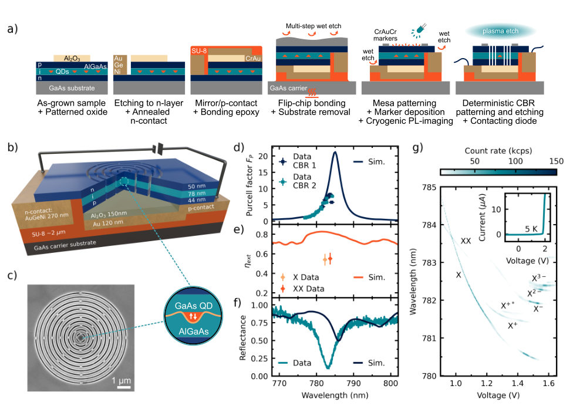
<figcaption class="paper-figure-caption"><b>Fig 1.</b> Figure 1: Device structure and basic optical and electrical performance. a, Workflow (from left to right) of de- terministic diode-CBR fabrication. b, Sketch of an electrically-contacted CBR containing a GaAs QD integrated in a p-i-n diode on a back reflector. c, Representative SEM image of a fabricated CBR. d, Simulated Purcell factor spectrum with the experimental data obtained from two diode-CBRs. e, Simulated extraction efficiency ηext spec- trum for a numerical aperture of 0.77 and corresponding experimental values for CBR 1. f, Simulated and measured reflectance spectrum of CBR 1 normalised to the reflection on the nearby planar semiconductor membrane. g, Colour-coded...</figcaption>
</figure>
<figure class="paper-figure-card">
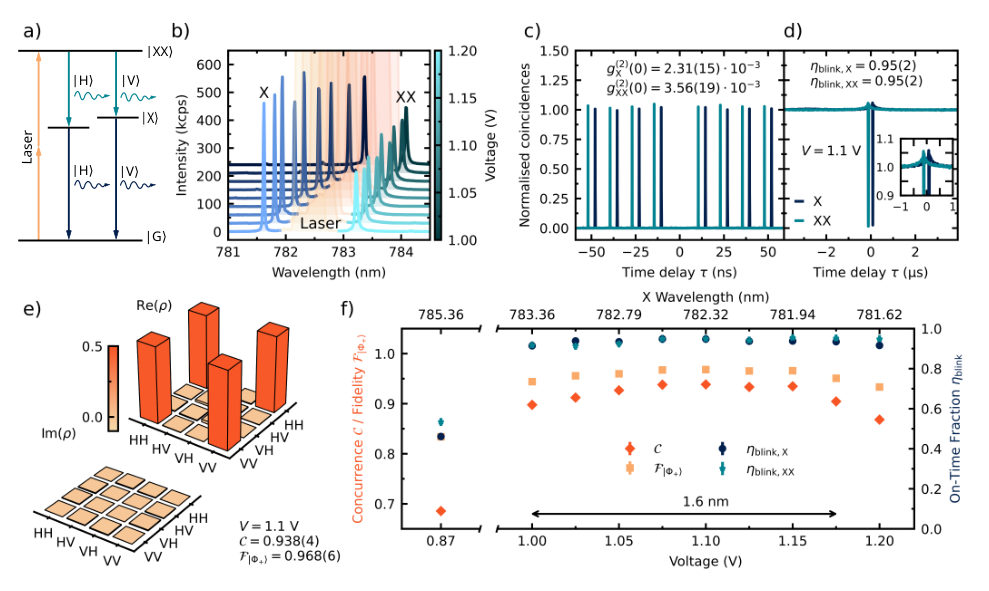
<figcaption class="paper-figure-caption"><b>Fig 2.</b> Figure 2: Near blinking-free emission of wavelength tuneable entangled photons under pulsed resonant two-photon excitation. a, Relevant energy levels in a QD. The biexciton state |XX⟩is resonantly populated by TPE and recombines via two possible decay paths (H or V polarised) through one of the bright exciton states |X⟩. Two photons are emitted, first the biexciton (XX, petrol) and subsequently the exciton (X, blue) photon. b, Spectra at different voltages, showing the XX emission at lower energy (higher wavelength) and the X emission at higher energy. With increasing voltage, both lines redshift and the XX relative binding energy Eb decreases. The TPE laser is shown in pale orange for...</figcaption>
</figure>
<figure class="paper-figure-card">
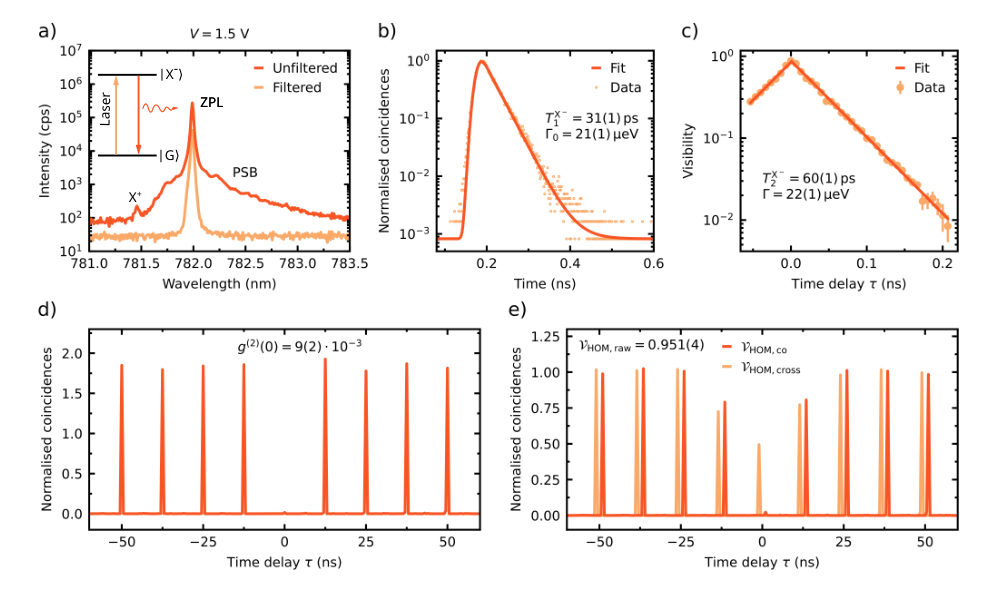
<figcaption class="paper-figure-caption"><b>Fig 3.</b> Figure 3: Indistinguishable, nearly Fourier-transform-limited single photons under π-pulse resonant excitation at V = 1.5 V. a, Semi-logarithmic unfiltered and filtered resonance fluorescence spectra of the negatively charged trion X−. Inset: Two-level quantum system. b, Lifetime measurement with fit, yielding T X− 1 = 31(1) ps. c, Semi-logarithmic first-order autocorrelation function |g(1)(τ)| and Lorentzian fit, yielding a linewidth of Γ = 22(1) µeV, a factor 1.05+0.07 −0.05 above the Fourier-transform-limit. d, Second-order autocorrelation histogram, yielding ˜g(2) X−(0) = 9(2) · 10−3. e, Histograms of Hong-Ou-Mandel interference of co- and cross polarised photons, yielding a raw...</figcaption>
</figure>
</div>

<p><strong>Summary.</strong> The paper reports the successful realization of a tunable, high-performance solid-state source for entangled and single photons using a novel diode nanocavity structure. By combining a quantum dot with a p-i-n diode and a Bragg grating resonator, the authors overcome limitations in efficiency and stability, demonstrating near-unity indistinguishability and high entanglement fidelity across a measurable spectral range.</p>
<p><strong>Why it may be interesting.</strong> This work directly addresses key challenges in quantum optics by integrating electrical control (diode) with strong optical enhancement (nanocavity) to create robust sources for photonic quantum information processing.</p>
<details>
<summary>Detailed structure</summary>
<p><strong>Main problem.</strong> The goal is to develop a reliable, efficient, and tunable solid-state platform for generating highly entangled photon pairs and indistinguishable single photons.</p>
<p><strong>Main result.</strong> The authors demonstrated a novel diode nanocavity structure that achieves high entanglement fidelity ($F > 0.94$) and near-unity single-photon indistinguishability ($V_{HOM} \approx 0.95$), while maintaining tunability over 1.6 nm.</p>
<p><strong>Method.</strong> The experiment utilizes a quantum dot embedded in a p-i-n diode circular-Bragg-grating-resonator, characterized by electrical measurements (I-V curves) and optical characterization of photon pairs and single photons.</p>
<p><strong>Model / system.</strong> The physical system is a semiconductor quantum dot integrated into a diode structure coupled to a circular-Bragg-grating resonator. This architecture allows for deterministic charge control via the diode, enhancing emission efficiency and suppressing blinking effects.</p>
<p><strong>Key observables.</strong> Concurrence ($C$), entanglement fidelity ($F_{|\Phi^+
angle}$), single-photon indistinguishability ($\mathcal{V}_{	ext{HOM}}$), extraction efficiency ($\eta_{	ext{ext}}$), and Purcell factor ($F_P$).</p>
<p><strong>Important parameters / regimes.</strong> Tunable wavelength range of 1.6 nm, high raw concurrence (&gt;0.89) and fidelity (&gt;0.94), and a maximum Purcell factor of $\sim$8.</p>
<p><strong>Assumptions / limitations.</strong> The measurements are performed at low temperatures (4 K), and the device performance is optimized based on theoretical FDTD simulations using specific geometric parameters.</p>
<p><strong>Figures summary.</strong> Figures illustrate the experimental workflow, the physical structure (SEM image), and comparisons between simulated and measured optical properties like Purcell factor and extraction efficiency spectra.</p>
<p><strong>Paper structure.</strong> The paper follows a standard experimental structure: introduction establishing the need for solid-state sources; detailed description of the novel diode-CBR device fabrication and characterization; presentation of results showing high-quality entangled pairs and single photons across a tunable range; and concluding remarks on its viability.</p>
</details>
<details>
<summary>Abstract</summary>
<p>Deterministic sources of entangled photon pairs and indistinguishable photons are expected to play a key role in photonic quantum technologies. Semiconductor quantum dots are promising candidates due to their on-demand emission and compatibility with nanophotonic structures. However, current implementations face trade-offs between extraction efficiency, Purcell enhancement, as well as charge noise that causes blinking and degrades indistinguishability. Here we demonstrate a tunable nano-optoelectronic device based on a quantum dot embedded in a p-i-n diode circular-Bragg-grating-resonator and featuring extraction efficiencies up to 0.55(6) and Purcell-factor of $\sim$8. The device generates wavelength-tunable entangled photon pairs with suppressed blinking and raw (corrected) concurrence &gt; 0.89 (0.91) over a range of 1.6 nm. The very same source also emits single, nearly Fourier-limited and highly indistinguishable photons with raw (corrected) $\mathcal{V}_{\text{HOM}}$ = 0.951(4) (0.988(6)). These results demonstrate a viable platform for semiconductor quantum photonics.</p>
</details>
<p><sub><a href="#top">↑ back to top</a></sub></p>

<p><a id="paper-2607.10950"></a></p>
<h3 id="math36math-form-gauge-dynamics-and-digital-quantum-simulation-flux-and-cosmological-constant-neutralization"><a href="http://arxiv.org/abs/2607.10950v1">$p$-Form Gauge Dynamics and Digital Quantum Simulation -- Flux and Cosmological Constant Neutralization</a></h3>
<p><strong>Authors:</strong> Soo-Jong Rey<br>
<strong>Type:</strong> theory · <strong>Category:</strong> statistical mechanics · <strong>PDF:</strong> <a href="https://arxiv.org/pdf/2607.10950v1">https://arxiv.org/pdf/2607.10950v1</a><br>
<strong>Analysis basis:</strong> full PDF text, analyzed in chunks
<strong>Topic relevance:</strong> 🔥 <code>non-equilibrium dynamics</code> <strong>5/5</strong> · 🔥 <code>analog quantum simulation</code> <strong>4/5</strong> · 🔥 <code>non-equilibrium universality</code> <strong>4/5</strong> · <code>driven-dissipative phase transition</code> <strong>3/5</strong> · <code>methods for driven-dissipative</code> <strong>3/5</strong> · <code>scars &amp; prethermalization</code> <strong>2/5</strong> · <code>Frenkel-Kontorova</code> <strong>1/5</strong> · <code>Keldysh / 2PI / non-Gaussian methods</code> <strong>1/5</strong> · <code>correlated / nonlocal dissipation</code> <strong>1/5</strong> · <code>entanglement &amp; information structure</code> <strong>1/5</strong> · <code>exotic spin models in light-matter</code> <strong>1/5</strong></p>
<div class="figure-strip-hint">↔ Scroll figures horizontally</div>
<div class="paper-figures-scroll">
<figure class="paper-figure-card">
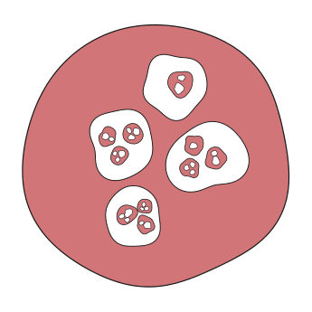
<figcaption class="paper-figure-caption"><b>Fig 1.</b> Figure 1: The late-time configuration anticipated for the post-discharge string-Higgs phase. The outer red region carries top-form electric flux; white islands are the dual vacuum. Each filled–empty interface is a closed matter string (τx ℓ= −1 along the curve). Repeated nucleation events at successively smaller scales results from non-equilibrium relaxation dynamics and generate a recursive nested-island structure—filled regions inside empty regions inside filled regions. The protocol of this paper resolves the dynamics by which such configurations are produced from a uniform high-flux initial state (Sec. 5); the equilibration sector accessible at late times is set by the...</figcaption>
</figure>
<figure class="paper-figure-card">
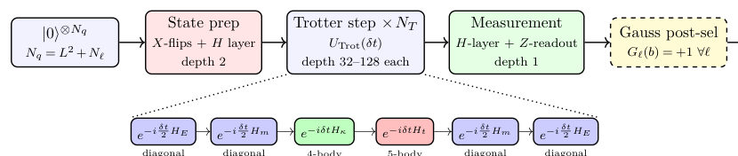
<figcaption class="paper-figure-caption"><b>Fig 2.</b> Figure 2: End-to-end digital quantum simulation pipeline. The Nq = L2 + Nℓphysical qubits are initialized in |0⟩⊗Nq, prepared in the tube or cap initial state by a depth-2 single-qubit circuit (X-flips on a chosen plaquette sublattice followed by Hadamards on all qubits), evolved by NT second-order symmetric Strang–Trotter steps (expanded lower row: each step interleaves the single-qubit electric terms with the entangling terms Hκ (4-body link-electric plaquette interaction) and Ht (5-body Wilson-surface)), and finally measured in the X-basis via a Hadamard layer followed by Z-readout. The displayed Hκ cost is 6L2 CNOTs when the four boundary-link qubits form a native path and 24L2 CNOTs on...</figcaption>
</figure>
<figure class="paper-figure-card">

<figcaption class="paper-figure-caption"><b>Fig 3.</b> Figure 3: Path-native circuit for the 4-body link-electric plaquette rotation exp(iκδt Q ℓ∈∂p τx ℓ). The circuit is native only when the four boundary-link qubits form a connected hardware path. On a minimal plaquette-link star, the same logical rotation requires routing.</figcaption>
</figure>
<figure class="paper-figure-card">
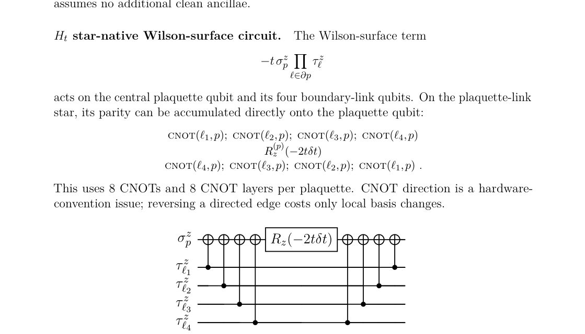
<figcaption class="paper-figure-caption"><b>Fig 4.</b> Figure 4: Star-native circuit for the 5-body Wilson-surface rotation exp(itδtσz p Q ℓ∈∂p τz ℓ). The four boundary links control CNOTs into the plaquette accumulator, a single Rz(−2tδt) applies the parity phase, and the CNOTs are reversed. The operator flips one plaquette electric flux and the four adjacent link occupations in the electric basis, preserving all four affected Gauss-laws.</figcaption>
</figure>
<figure class="paper-figure-card">
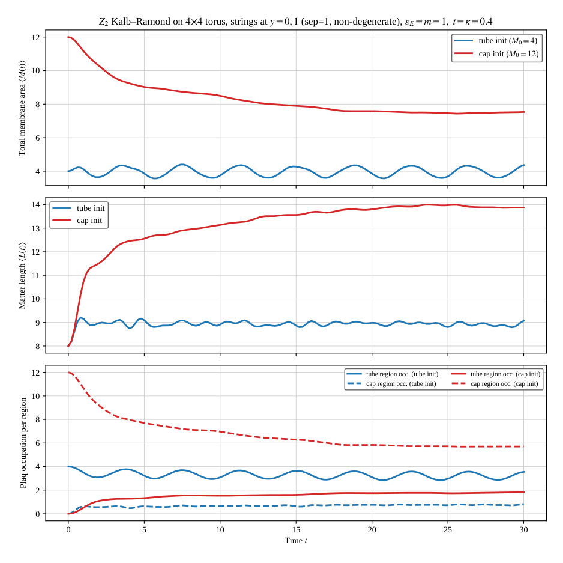
<figcaption class="paper-figure-caption"><b>Fig 5.</b> Figure 6: Real-time exact diagonalization of the tube-vs-cap quench on a 4×4 spatial torus (16 plaquette qubits, 216 Gauss-law-projected Hilbert space). Two parallel non-contractible closed string/domain-wall boundaries wrap the periodic x-direction at y1 = 0 and y2 = 1 (asymmetric separation 1 &lt; Ly/2). Blue: tube initial state, electric-flux region on the single plaquette row between the strings (M0 = 4). Red: cap initial state, electric-flux region on the complement strip of three rows (M0 = 12). Top: total occupied-flux area M(t). Middle: total boundary length L(t). Bottom: per-region plaquette occupation—solid lines track the tube region (1 row, max 4), dashed lines track the cap region...</figcaption>
</figure>
</div>

<p><strong>Summary.</strong> This paper constructs a Hamiltonian framework for $p$-form gauge fields on lattices, modeling phenomena relevant to cosmology. By simulating 'quench' dynamics on specialized plaquette Hamiltonians, the authors observe distinct decay behaviors between different initial flux configurations. The results establish a quantitative crossover point and place top-form discharge within a general higher-form theoretical structure.</p>
<p><strong>Why it may be interesting.</strong> The study of flux dynamics in lattice gauge theories provides rich non-equilibrium physics analogous to phase transitions or relaxation processes studied in classical statistical mechanics models.</p>
<details>
<summary>Detailed structure</summary>
<p><strong>Main problem.</strong> Developing a Hamiltonian framework for $Z_k$ $p$-form gauge fields to study flux dynamics, which has implications for cosmological constant neutralization.</p>
<p><strong>Main result.</strong> The simulation shows that in a 'tube-cap quench,' the cap loses 20–37% of its occupied-flux area while the tube remains nearly pinned, and a dynamical crossover is located near $(m/\epsilon E)_c \simeq 1.89$.</p>
<p><strong>Method.</strong> Exact diagonalization (ED) on tori combined with numerical simulations analyzing time evolution under quench protocols.</p>
<p><strong>Model / system.</strong> The model uses $Z_k$ $p$-form gauge fields defined on arbitrary oriented cell complexes, specialized to a plaquette-only Ising-type Hamiltonian after solving the one-form Gauss law. This structure is compared against redundant link-plus-plaquette encodings.</p>
<p><strong>Key observables.</strong> Occupied-flux area ($M(t)$), boundary length ($L(t)$), and the contrast $\mathcal{M}_{	ext{cap}}(t) - \mathcal{M}_{	ext{tube}}(t)$.</p>
<p><strong>Important parameters / regimes.</strong> The ratio of boundary energy to electric flux ($\epsilon E$) versus link tension ($m$), with a critical crossover point near $1.89$.</p>
<p><strong>Assumptions / limitations.</strong> The link occupation is treated as a derived observable determined by adjacent plaquette fluxes, not an independent variable.</p>
<p><strong>Figures summary.</strong> Figures illustrate the time evolution of occupied-flux area and decay rates across parameter sweeps on tori, pinpointing crossover regimes.</p>
<p><strong>Paper structure.</strong> The work builds from general $p$-form gauge theory to a specialized, reduced plaquette Hamiltonian suitable for ED. It then applies this framework to quench dynamics simulations, comparing results between the simplified model and the full digital encoding.</p>
</details>
<details>
<summary>Abstract</summary>
<p>I develop a Hamiltonian framework for ${\mathbb Z}_k$ $p$-form gauge fields on arbitrary oriented cell complexes in arbitrary dimensions. Gauge qudits are defined by $p$-cells, charged boundary qudits by $(p-1)$-cells, Gauss-law generators by boundary map $\partial_p$, and magnetic checks by $\partial_{p+1}$. The same cellular structure produces local dressed Wilson operators, and at $k=2$ a Calderbank-Shor-Steane check complex relevant to quantum error correction. I then specialize to $p=2, k=2$, where the magnetic 3-cell term is absent and the one-form Gauss-law can be solved exactly. The physical Hilbert space is parameterized by plaquette electric-flux variables, while the link configuration is reconstructed as the dynamical boundary of the evolving flux domains. The reduced Hamiltonian is an Ising-type plaquette model, where its local transverse-field term is the physical image of the boundary-dressed Wilson operator $σ_p^z\prod_{\ell\in\partial p}τ_\ell^z$. A tube-cap quench compares two initial flux fillings with the same initial boundary loops. Exact diagonalization on $4\times4$, $6\times4$, and $5\times5$ tori finds that the cap loses $20$-$37\%$ of its occupied-flux area, while the tube remains nearly pinned. A finite-size scaling locates a dynamical crossover of tension-to-density ratio near $(m/\varepsilon_E)_c\simeq1.89$. The unreduced plaquette-plus-link encoding provides local Gauss-law checks and a direct digital implementation, while the reduced plaquette-only Hamiltonian supplies the exact benchmark. The result places the specific top-form discharge and the cosmological constant neutralization calculation inside a general higher-form Hamiltonian and coding framework.</p>
</details>
<p><sub><a href="#top">↑ back to top</a></sub></p>

<p><a id="paper-2607.11055"></a></p>
<h3 id="generalized-keldysh-formalism-for-nonequilibrium-correlation-functions-and-its-application-to-fluctuation-dynamics"><a href="http://arxiv.org/abs/2607.11055v1">Generalized Keldysh formalism for nonequilibrium correlation functions and its application to fluctuation dynamics</a></h3>
<p><strong>Authors:</strong> Ken Inayoshi, Hiroshi Shinaoka, Yuta Murakami<br>
<strong>Type:</strong> theory · <strong>Category:</strong> strongly correlated electrons · <strong>PDF:</strong> <a href="https://arxiv.org/pdf/2607.11055v1">https://arxiv.org/pdf/2607.11055v1</a><br>
<strong>Analysis basis:</strong> full PDF text, analyzed in chunks
<strong>Topic relevance:</strong> 🔥 <code>Keldysh / 2PI / non-Gaussian methods</code> <strong>5/5</strong> · 🔥 <code>non-equilibrium dynamics</code> <strong>4/5</strong> · 🔥 <code>non-equilibrium universality</code> <strong>4/5</strong> · <code>analog quantum simulation</code> <strong>3/5</strong> · <code>driven-dissipative phase transition</code> <strong>3/5</strong> · <code>methods for driven-dissipative</code> <strong>3/5</strong> · <code>correlated / nonlocal dissipation</code> <strong>1/5</strong> · <code>correlated cavity matter</code> <strong>1/5</strong> · <code>entanglement &amp; information structure</code> <strong>1/5</strong></p>
<div class="figure-strip-hint">↔ Scroll figures horizontally</div>
<div class="paper-figures-scroll">
<figure class="paper-figure-card">
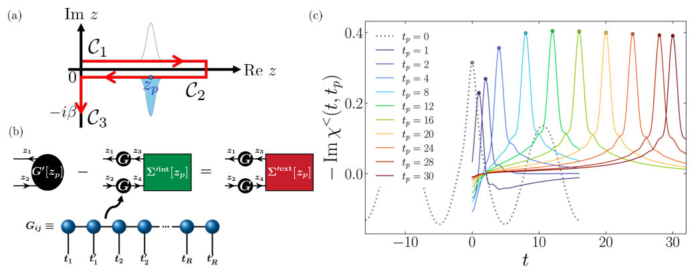
<figcaption class="paper-figure-caption"><b>Fig 1.</b> Figure 1. (a) Keldysh contour C and its forward real-time (C1), backward real-time (C2), and Matsubara (C3) branches. The blue Gaussian represents the contour-dependent external field 𝐹(𝑧) centered at the probe time 𝑧𝑝. (b) Diagrammatic expression of the linear integral equation (3). The tensor network diagram is for 𝐺𝑖𝑗, defined as 𝐺𝑖𝑗(𝑡, 𝑡′) ≡𝐺(𝑡∈C𝑖, 𝑡′ ∈C𝑗) for 𝑖, 𝑗= 1, 2, 3. (c) Time evolution of the imaginary part of the lesser component of the spin-spin correlation function 𝜒(Eq. (5)) for the quench 𝑈= 2.0 →1.2. Circle points show the fluctuation 𝜎𝑚(𝑡𝑝) = −Im 𝜒&lt;(𝑡𝑝, 𝑡𝑝) (Eq. (6)).</figcaption>
</figure>
<figure class="paper-figure-card">
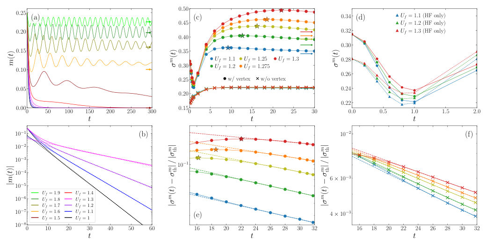
<figcaption class="paper-figure-caption"><b>Fig 2.</b> Figure 2. Nonequilibrium dynamics of the staggered magnetization 𝑚(𝑡) and its fluctuation 𝜎𝑚(𝑡) for quenches 𝑈𝑖= 2.0 →𝑈𝑓. (a) Time evolution of 𝑚(𝑡) for 𝑈𝑓= 1.9, 1.8, · · · , 1.0 (from top to bottom). The arrows indicate the corresponding thermal values 𝑚th of 𝑚(𝑡). (b) Logarithmic plot of (a). The straight dashed lines show fits to exponential relaxations in the region 𝑡∈[10, 50]. (c) Comparison of the fluctuation 𝜎𝑚(𝑡) with and without the vertex correction. The arrows indicate the corresponding thermal values 𝜎𝑚 th . The star points are the maximum value of the fluctuation 𝜎𝑚 max estimated by parabolic interpolation. (d) Comparison of the fluctuation when only the Hartree-Fock term is...</figcaption>
</figure>
<figure class="paper-figure-card">
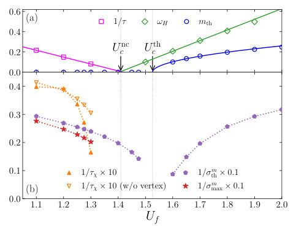
<figcaption class="paper-figure-caption"><b>Fig 3.</b> Figure 3. Various quantities used to characterize the qualitative change in behavior around the critical points 𝑈th 𝑐and 𝑈nc 𝑐. (a) The decay time of the order parameter 𝜏, the frequency of the Higgs mode 𝜔𝐻, and the thermal value of the order parameter 𝑚th (see the Supple- mental Material for the estimation of 𝜔𝐻). 𝑈th 𝑐is the thermal critical point, and this value is evaluated from a linear fit to 𝑚2 th with the least squares method. 𝑈nc 𝑐is the nonthermal critical point, and this value is estimated from the crossing point of the linear fits of 1/𝜏and 𝜔𝐻 (solid lines in (a)). (b) The decay time of the fluctuation with and without vertex corrections 𝜏𝜒, the thermal value of the fluctuation...</figcaption>
</figure>
<figure class="paper-figure-card">
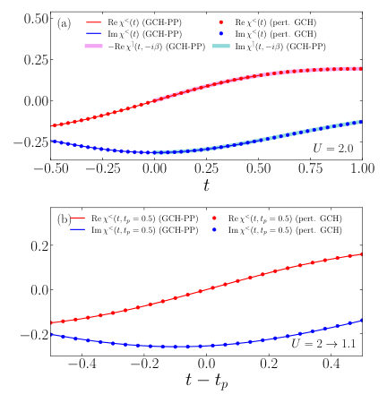
<figcaption class="paper-figure-caption"><b>Fig 4.</b> Figure 4. Comparison of the spin-spin correlation function 𝜒(𝑧, 𝑧𝑝) calculated by the GCH pump-probe simulation (GCH-PP, solid lines) and the perturbative GCH method (pert. GCH, points). (a) Equilib- rium case for 𝑈= 2 and 𝛽= 20. The thick magenta and cyan lines show the left-mixing component 𝜒⌉(𝑡, −𝑖𝛽). (b) Nonequilibrium case for 𝑈𝑖= 2.0 →𝑈𝑓= 1.1 and 𝛽= 20.</figcaption>
</figure>
<figure class="paper-figure-card">
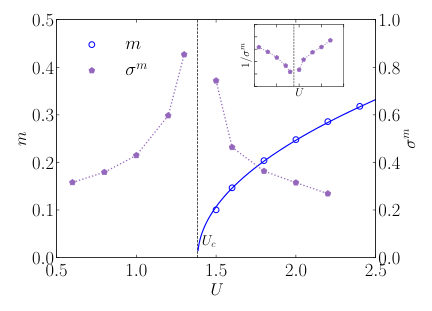
<figcaption class="paper-figure-caption"><b>Fig 5.</b> Figure 5. Staggered magnetization 𝑚and its fluctuation 𝜎𝑚at 𝛽= 20.0. The inset shows the inverse of 𝜎𝑚. The horizontal black dashed line shows the critical point 𝑈c ≈1.38.</figcaption>
</figure>
</div>

<p><strong>Summary.</strong> This paper introduces a novel and computationally efficient method based on the generalized Keldysh formalism to calculate nonequilibrium two-particle correlation functions. By solving a derived linear integral equation using QTTs, the authors show that vertex corrections are essential for accurately describing fluctuation dynamics near quantum critical points in correlated materials.</p>
<p><strong>Why it may be interesting.</strong> While focused on condensed matter correlations, the development of advanced numerical solvers (Krylov methods, QTTs) for time-dependent many-body response functions is highly relevant to open quantum systems simulations in AMO physics.</p>
<details>
<summary>Detailed structure</summary>
<p><strong>Main problem.</strong> The primary challenge addressed is computing nonequilibrium two-particle correlation functions, which are crucial for characterizing collective dynamics in correlated quantum materials far from equilibrium.</p>
<p><strong>Main result.</strong> The study demonstrates that including vertex corrections significantly alters the fluctuation dynamics of an order parameter near a nonthermal critical point, causing the fluctuation and its decay time to grow substantially.</p>
<p><strong>Method.</strong> The authors develop a practical approach using the generalized Keldysh formalism by formulating a linear integral equation for the variation of the Green's function. This is solved efficiently using a matrix-free Krylov solver based on quantics tensor trains (QTTs).</p>
<p><strong>Model / system.</strong> The analysis applies to correlated electron systems, specifically utilizing the Hubbard model framework within a Dynamical Mean-Field Theory (DMFT) context. The study investigates quench or pump-probe dynamics in symmetry-broken states.</p>
<p><strong>Key observables.</strong> Nonequilibrium two-particle correlation functions ($\chi_{BA}$), order parameter fluctuation ($\sigma_m(t)$), and the staggered magnetization ($m$).</p>
<p><strong>Important parameters / regimes.</strong> The analysis focuses on approaching both thermal ($U_{th}^c$) and nonthermal critical points ($U_n^c$), controlled by the time-dependent Hubbard interaction $U(t)$.</p>
<p><strong>Assumptions / limitations.</strong> Key approximations include using a linear integral equation to bypass explicit four-time vertex kernel construction, and employing DMFT with second-order perturbation theory for the self-energy.</p>
<p><strong>Figures summary.</strong> Figures illustrate the Keldysh contour setup, diagrammatic representations of the linear integral equation, and time evolution plots showing how $\sigma_m(t)$ changes when vertex corrections are included near critical points.</p>
<p><strong>Paper structure.</strong> The paper builds from establishing the generalized Keldysh formalism for correlation functions to deriving a solvable linear integral equation. It then applies this method within DMFT to study quench dynamics, comparing results with and without vertex corrections across different critical regimes.</p>
</details>
<details>
<summary>Abstract</summary>
<p>Recent advances in time-resolved spectroscopies provide increasing access to collective dynamics in correlated quantum materials. However, computing the corresponding nonequilibrium two-particle correlation functions remains a major challenge. Here, by introducing a contour-dependent virtual probe field within the generalized Keldysh formalism, we propose an approach that computes such correlation functions with the vertex corrections essential for describing collective dynamics. In particular, we introduce a linear integral equation that computes the correlation functions without explicitly constructing the four-time vertex kernel, and develop its matrix-free Krylov solver based on quantics tensor trains. Combining our method with nonequilibrium dynamical mean-field theory, we show that the fluctuation dynamics of the order parameter in a nonequilibrium symmetry-broken state depends significantly on whether vertex corrections are included, and that the fluctuation and its decay time grow near the nonthermal critical point. Our approach thus provides a practical route for evaluating nonequilibrium correlation functions, which are emerging as key observables for characterizing states far from equilibrium.</p>
</details>
<p><sub><a href="#top">↑ back to top</a></sub></p>

<p><a id="paper-2607.11038"></a></p>
<h3 id="many-body-physics-with-rydberg-atoms-quantum-simulation-and-non-equilibrium-dynamics"><a href="http://arxiv.org/abs/2607.11038v1">Many-Body Physics with Rydberg Atoms: Quantum Simulation and Non-equilibrium Dynamics</a></h3>
<p><strong>Authors:</strong> Zhengyang Bai, Cheng Chen, Fan Yang, Weibin Li<br>
<strong>Type:</strong> both · <strong>Category:</strong> other · <strong>PDF:</strong> <a href="https://arxiv.org/pdf/2607.11038v1">https://arxiv.org/pdf/2607.11038v1</a><br>
<strong>Analysis basis:</strong> full PDF text, analyzed in chunks
<strong>Topic relevance:</strong> 🔥 <code>Rydberg arrays</code> <strong>5/5</strong> · 🔥 <code>analog quantum simulation</code> <strong>4/5</strong> · <code>entanglement &amp; information structure</code> <strong>3/5</strong> · <code>exotic spin models in light-matter</code> <strong>3/5</strong> · <code>non-equilibrium dynamics</code> <strong>3/5</strong> · <code>non-equilibrium universality</code> <strong>2/5</strong> · <code>Keldysh / 2PI / non-Gaussian methods</code> <strong>1/5</strong> · <code>QC/QI experiment</code> <strong>1/5</strong> · <code>driven-dissipative phase transition</code> <strong>1/5</strong> · <code>methods for driven-dissipative</code> <strong>1/5</strong></p>
<div class="figure-strip-hint">↔ Scroll figures horizontally</div>
<div class="paper-figures-scroll">
<figure class="paper-figure-card">
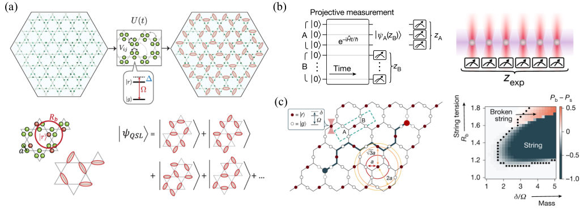
<figcaption class="paper-figure-caption"><b>Fig 1.</b> Figure 1. Quantum simulation with Ising-type interactions in Rydberg arrays. (a) Realization of a quantum spin liquid on a Kagome lattice, where the dimer constraint is enabled by the Rydberg blockade. (b) Preparing a random quantum state using quantum thermalization and site-resolved imaging in a 1D Rydberg array. (c) Observation of string-breaking in a U(1) lattice gauge theory in (2+1)D. (Reproduced with permission and adapted from Ref. [13], Ref. [19], and Ref. [20], licensed under a Creative Commons Attribution 4.0 International license.)</figcaption>
</figure>
<figure class="paper-figure-card">
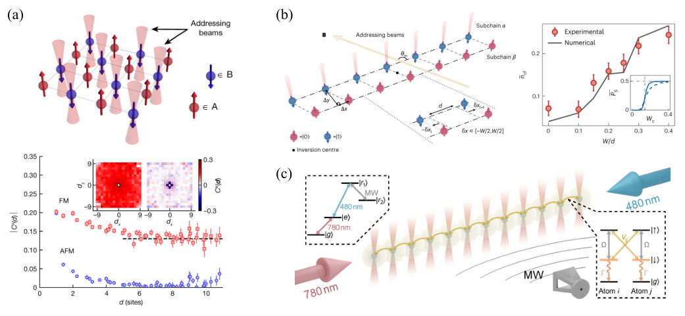
<figcaption class="paper-figure-caption"><b>Fig 2.</b> Figure 2. Quantum simulation with resonant dipole-dipole interactions in Rydberg arrays. (a) Observation of ferromagnetic and anti- ferromagnetic orders in a dipolar XY model in 2D. (b) Probing average symmetry protected topological order in a Rydberg-atom ladder with programmable disorder. (c) Realization of a non-Hermitian many-body XY model in a 1D Rydberg array. (Reproduced with permission and adapted from Ref. [52], Ref. [53], and Ref. [54], licensed under a Creative Commons Attribution 4.0 International license.)</figcaption>
</figure>
<figure class="paper-figure-card">
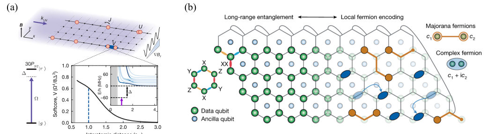
<figcaption class="paper-figure-caption"><b>Fig 3.</b> Figure 3. Rydberg quantum simulation with interactions induced in the ground-state manifolds. (a) Realization of an extended Bose-Hubbard model in optical lattices, where the long-range density-density interaction is induced by Rydberg dressing. (b) Digital realization of Kitaev honeycomb model in a Rydberg array. (Reproduced with permission and adapted from Ref. [71] and Ref. [72], licensed under a Creative Commons Attribution 4.0 International license.)</figcaption>
</figure>
<figure class="paper-figure-card">
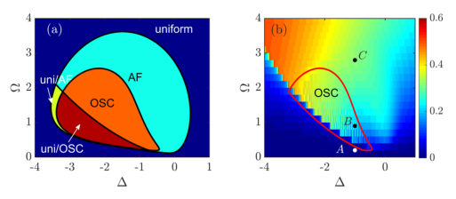
<figcaption class="paper-figure-caption"><b>Fig 4.</b> Figure 4. Mean-field phase diagrams. (a) The phase diagram is mainly occupied by the UNI, AF, and OSC phase. (b) The many-body phases could be detected by sweeping detuning ∆from red to blue side linearly (i.e., ∆(t) = ∆0 + a × t). The Rydberg population nr(t) in the ∆−Ωplane is sketched. The oscillatory phase can be identified by Rydberg excitation. In the calculation, we set VAB = −8, γ = 0.5 and a = 0.01.</figcaption>
</figure>
<figure class="paper-figure-card">
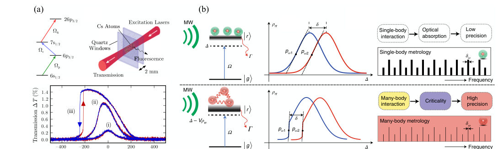
<figcaption class="paper-figure-caption"><b>Fig 5.</b> Figure 5. (a) A non-equilibrium phase transition is observed in a thermal Rydberg vapor via a multi-photon excitation scheme. (b) Many-body criticality- enhanced metrology for sensing external microwave electric fields in a non-equilibrium Rydberg atomic gas. (Reproduced with permission and adapted from Ref. [4] and Ref. [17], licensed under a Creative Commons Attribution 4.0 International license.)</figcaption>
</figure>
</div>

<p><strong>Summary.</strong> This review provides a comprehensive survey of using Rydberg atoms to investigate many-body physics. It covers theoretical tools like the Ising model and LGTs, demonstrating how these are realized experimentally in programmable atomic arrays. The paper highlights breakthroughs in studying non-equilibrium dynamics, topological phases, and quantum simulation potential.</p>
<p><strong>Why it may be interesting.</strong> This work is highly relevant as it details the cutting edge of using neutral atoms to simulate complex quantum matter models, bridging fundamental condensed matter theory with state-of-the-art experimental quantum optics.</p>
<details>
<summary>Detailed structure</summary>
<p><strong>Main problem.</strong> The review explores how Rydberg atoms, due to their strong dipole-dipole interactions, can be used as a versatile platform to study complex many-body physics, quantum simulation, and non-equilibrium dynamics.</p>
<p><strong>Main result.</strong> Significant progress has been made in observing exotic phases (like topological states) and verifying fundamental dynamic processes (like QKZM) by mapping theoretical models onto programmable Rydberg atom arrays.</p>
<p><strong>Method.</strong> The paper synthesizes theoretical frameworks (e.g., Ising model, LGTs) with experimental techniques involving adiabatic state preparation, site-resolved measurements, and quench dynamics in atomic ensembles.</p>
<p><strong>Model / system.</strong> The primary system is arrays of Rydberg atoms trapped in optical tweezers or lattices. Key models include the Quantum Ising model ($\hat{H} = \sum \Omega \hat{\sigma}_i^x - \sum V_{ij}\hat{n}_i\hat{n}_j$) and extensions to simulate lattice gauge theories and spin-1/2 XY models.</p>
<p><strong>Key observables.</strong> Phase transitions (e.g., crystalline order), correlation growth, entanglement entropy, out-of-time-ordered correlators (OTOCs), and signatures of quantum criticality.</p>
<p><strong>Important parameters / regimes.</strong> Interaction strength ($V_{ij} \propto 1/R_{ij}^6$), detuning ($\Delta$), blockade radius ($R_b$), and lattice geometry (e.g., Kagome, triangular).</p>
<p><strong>Assumptions / limitations.</strong> The review assumes the ability to precisely control atomic interactions and map complex Hamiltonians onto controllable physical platforms.</p>
<p><strong>Figures summary.</strong> Figures illustrate quantum spin liquid realization on a Kagome lattice via blockade constraints, preparation of random states in 1D arrays, and observation of string-breaking dynamics in a U(1) system.</p>
<p><strong>Paper structure.</strong> The review is structured thematically, covering theoretical foundations (interactions), specific physical phenomena (phase transitions, thermalization, LGTs), advanced dynamic studies (QKZM, OTOCs), and applications (optimization).</p>
</details>
<details>
<summary>Abstract</summary>
<p>Rydberg atoms, characterized by their strong and long-range dipole-dipole interactions, provide a versatile platform for exploring intriguing collective and many-body effects. Recently, the experimental realization of these effects in dense ensembles and reconfigurable atomic arrays has attracted significant interest, particularly for applications in quantum simulations and non-equilibrium physics. This review focuses on such recent development, discussing the theoretical foundations of the interactions between Rydberg atoms and the ensuing many-body physics, while providing a critical survey of experimental techniques for their precise manipulation and observation. We further discuss recent breakthroughs in leveraging Rydberg collective effects to probe novel many-body phases and non-equilibrium dynamics of these systems. By synthesizing theoretical insights with experimental milestones, we provide a comprehensive perspective on this rapidly evolving field and its transformative potential for future quantum technologies.</p>
</details>
<p><sub><a href="#top">↑ back to top</a></sub></p>

<p><a id="paper-2607.11580"></a></p>
<h3 id="classical-probabilistic-realisation-of-quantum-double-slit-interference"><a href="http://arxiv.org/abs/2607.11580v1">Classical probabilistic realisation of quantum double-slit interference</a></h3>
<p><strong>Authors:</strong> Christof Wetterich<br>
<strong>Type:</strong> theory · <strong>Category:</strong> statistical mechanics · <strong>PDF:</strong> <a href="https://arxiv.org/pdf/2607.11580v1">https://arxiv.org/pdf/2607.11580v1</a><br>
<strong>Analysis basis:</strong> full PDF text, analyzed in chunks
<strong>Topic relevance:</strong> 🔥 <code>interference shaping light</code> <strong>5/5</strong> · <code>Keldysh / 2PI / non-Gaussian methods</code> <strong>3/5</strong> · <code>non-equilibrium dynamics</code> <strong>2/5</strong> · <code>driven-dissipative phase transition</code> <strong>1/5</strong> · <code>methods for driven-dissipative</code> <strong>1/5</strong> · <code>quantum measurements</code> <strong>1/5</strong></p>
<div class="figure-strip-hint">↔ Scroll figures horizontally</div>
<div class="paper-figures-scroll">
<figure class="paper-figure-card">
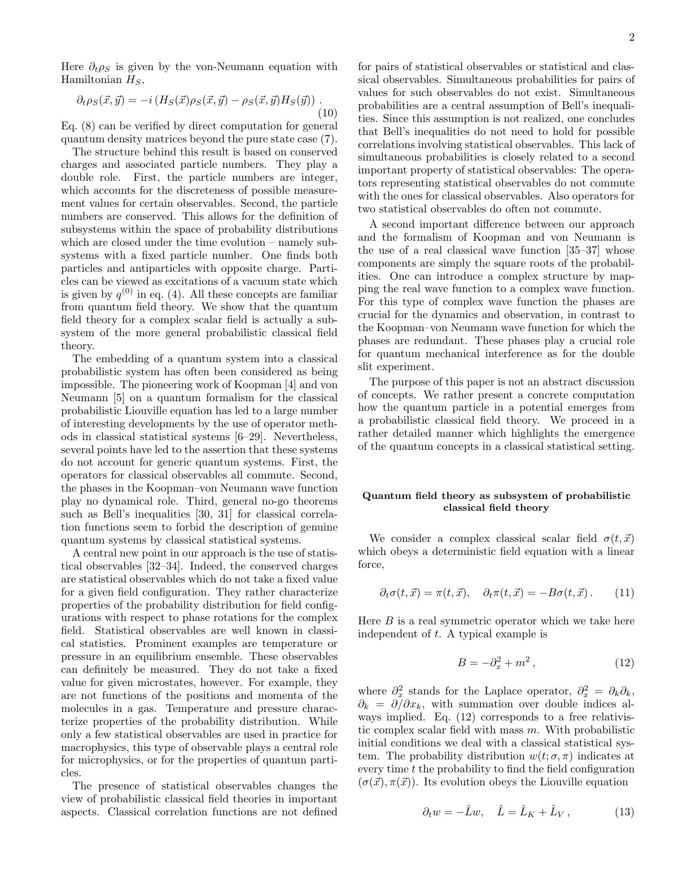
<figcaption class="paper-figure-caption"><b>Fig 1.</b> Low-resolution page preview, page 2</figcaption>
</figure>
<figure class="paper-figure-card">
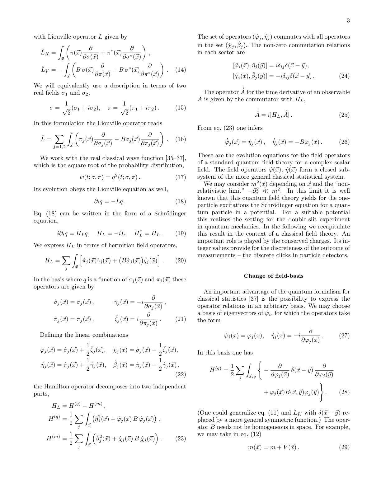
<figcaption class="paper-figure-caption"><b>Fig 2.</b> Low-resolution page preview, page 3</figcaption>
</figure>
<figure class="paper-figure-card">
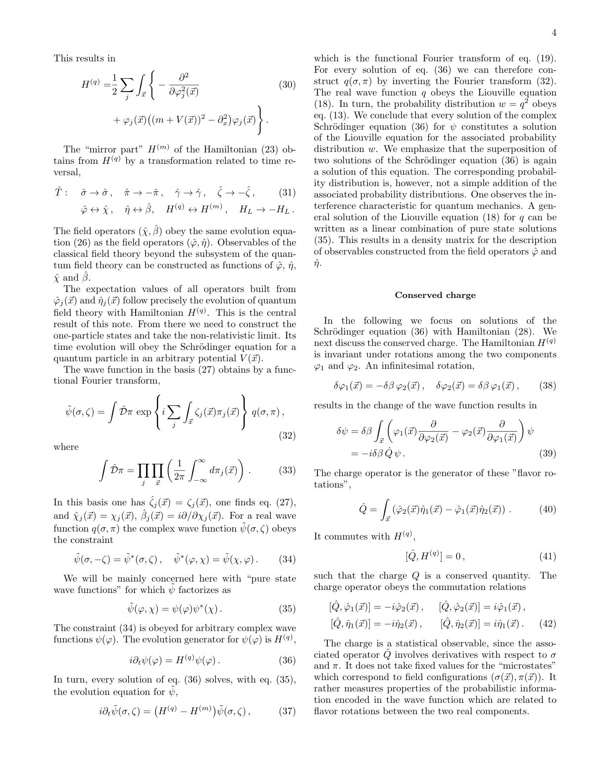
<figcaption class="paper-figure-caption"><b>Fig 3.</b> Low-resolution page preview, page 4</figcaption>
</figure>
<figure class="paper-figure-card">
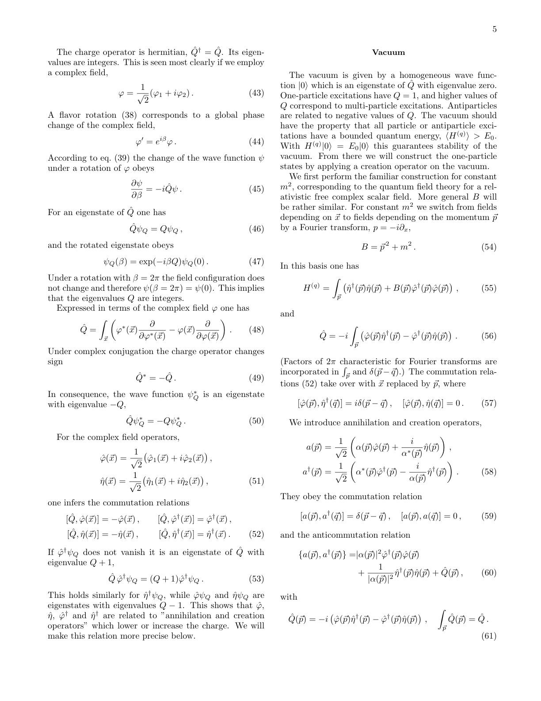
<figcaption class="paper-figure-caption"><b>Fig 4.</b> Low-resolution page preview, page 5</figcaption>
</figure>
<figure class="paper-figure-card">
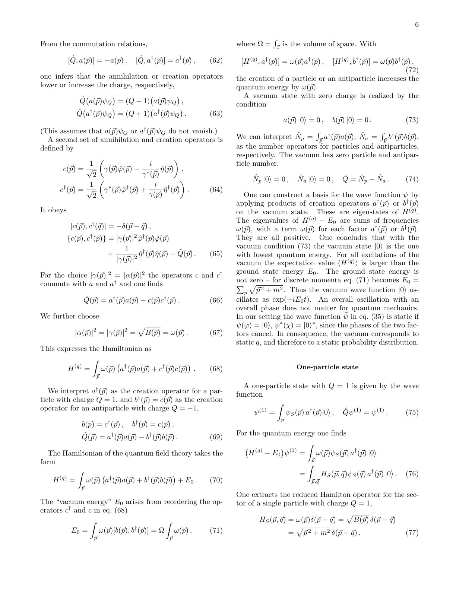
<figcaption class="paper-figure-caption"><b>Fig 5.</b> Low-resolution page preview, page 6</figcaption>
</figure>
</div>

<p><strong>Summary.</strong> The paper proposes that quantum phenomena, such as double-slit interference, can be fully described using classical probability theory applied to a complex scalar field. By analyzing the evolution of one-particle probability distributions derived from this classical system, the authors rigorously demonstrate that the resulting dynamics must obey the Schrödinger equation for a quantum particle. This provides a deep connection between statistical mechanics and fundamental quantum theory.</p>
<p><strong>Why it may be interesting.</strong> This work offers a radical reinterpretation of quantum mechanics by grounding its core predictions (like interference) in classical statistical dynamics, which is highly relevant for foundational theoretical physics and understanding measurement processes.</p>
<details>
<summary>Detailed structure</summary>
<p><strong>Main problem.</strong> The central goal is to demonstrate that quantum interference effects, exemplified by the double-slit experiment, can be derived entirely from classical probabilistic descriptions.</p>
<p><strong>Main result.</strong> The time evolution of the one-particle probability distribution, governed by a classical Liouville equation, mathematically implies that the associated complex wave function obeys the standard Schrödinger equation for a quantum particle in an arbitrary potential V(x).</p>
<p><strong>Method.</strong> The authors construct a framework using conserved charges and statistical observables within a classical field theory. They show that the evolution of the probability distribution $w^{(1)}$ leads directly to the quantum mechanical time evolution via the Liouville-Schrödinger connection.</p>
<p><strong>Model / system.</strong> The model involves a complex scalar field $\sigma(t, \vec{x})$ treated probabilistically. The dynamics are governed by a classical statistical Liouville equation ($\partial_t w = -\hat{L}w$), which is shown to map onto the quantum von-Neumann/Schrödinger evolution for one-particle excitations.</p>
<p><strong>Key observables.</strong> The probability distribution $w(t; \sigma, \pi)$ and the derived one-particle wave function $\psi_S(t, \vec{x})$ are key observables used to predict interference patterns.</p>
<p><strong>Important parameters / regimes.</strong> The arbitrary potential $V(\vec{x})$ allows for the realization of typical quantum effects like tunneling or discrete energy spectra. The non-relativistic limit is a focus point.</p>
<p><strong>Assumptions / limitations.</strong> The approach relies on using statistical observables whose associated operators do not commute with those for classical observables, and it currently covers bosons while interactions between multiple particles require extending to a full interacting classical field theory.</p>
<p><strong>Figures summary.</strong> Not specified in the notes; the structure is based on deriving equations of motion (Eq. 1, Eq. 6, Eq. 13) and showing functional relationships between different representations ($\psi$ vs $w$).</p>
<p><strong>Paper structure.</strong> The paper establishes the classical probabilistic framework using a complex scalar field, derives the Liouville equation for the probability distribution, and then proves that restricting this formalism to one-particle subsystems forces the evolution of the associated wave function into the Schrödinger equation.</p>
</details>
<details>
<summary>Abstract</summary>
<p>We demonstrate how the interference effects for a quantum particle in the double-slit experiment can be described by classical probabilities. We investigate a classical field theory for a complex scalar field with probabilistic initial conditions. A central element are conserved charges leading to the concept of particles. These are statistical observables which describe properties of the probability distribution for field configurations. The conserved charges define subsystems for particle excitations of a vacuum state. We encode the probabilistic information for the one-particle subsystem in a complex wave function. The Liouville equation for the classical probability distribution implies that the time evolution of this wave function obeys the Schrödinger equation for a quantum particle in a potential. The potential arises from a space-dependence of the mass term in the otherwise relativistic classical field theory. It can be chosen arbitrarily, realizing the typical quantum effects of interference, tunneling or discrete energy spectra.</p>
</details>
<p><sub><a href="#top">↑ back to top</a></sub></p>

<p><a id="paper-2607.11315"></a></p>
<h3 id="controlling-the-inhomogeneous-broadening-and-impedance-matching-of-a-spin-ensemble"><a href="http://arxiv.org/abs/2607.11315v1">Controlling the Inhomogeneous Broadening and Impedance Matching of a Spin Ensemble</a></h3>
<p><strong>Authors:</strong> Mathieu Couillard, Debdip Guchait, Hiroki Takahashi, Yuimaru Kubo<br>
<strong>Type:</strong> experiment · <strong>Category:</strong> other · <strong>PDF:</strong> <a href="https://arxiv.org/pdf/2607.11315v1">https://arxiv.org/pdf/2607.11315v1</a><br>
<strong>Analysis basis:</strong> full PDF text, analyzed in chunks
<strong>Topic relevance:</strong> 🔥 <code>exotic spin models in light-matter</code> <strong>4/5</strong> · 🔥 <code>quantum optics experiment</code> <strong>4/5</strong> · 🔥 <code>spintronics-quantum-optics interface</code> <strong>4/5</strong> · <code>Tavis-Cummings &amp; cavity-many-emitter</code> <strong>3/5</strong> · <code>analog quantum simulation</code> <strong>3/5</strong> · <code>correlated cavity matter</code> <strong>3/5</strong> · <code>QC/QI experiment</code> <strong>2/5</strong> · <code>correlated / nonlocal dissipation</code> <strong>1/5</strong> · <code>driven-dissipative phase transition</code> <strong>1/5</strong> · <code>entanglement &amp; information structure</code> <strong>1/5</strong> · <code>interference shaping light</code> <strong>1/5</strong> · <code>methods for driven-dissipative</code> <strong>1/5</strong> · <code>non-equilibrium dynamics</code> <strong>1/5</strong> · <code>quantum measurements</code> <strong>1/5</strong></p>
<div class="figure-strip-hint">↔ Scroll figures horizontally</div>
<div class="paper-figures-scroll">
<figure class="paper-figure-card">
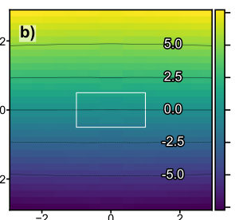
<figcaption class="paper-figure-caption"><b>Fig 1.</b> FIG. 1. a) Cross section of the simulated static magnetic field z- component, produced by the anti-Helmholtz coils with the coil axis along the z-direction. The 4 black rectangles represent cross sections of the coils, the lines are contour lines of constant Bz, and the sample is contained in the white box outlined at the center of the plot. The simulation has 9000 Turns per coil and driven with a current of 200 mA. b) Close up of the sample region, where the field is shown to be well approximated as linear along the z-direction.</figcaption>
</figure>
<figure class="paper-figure-card">
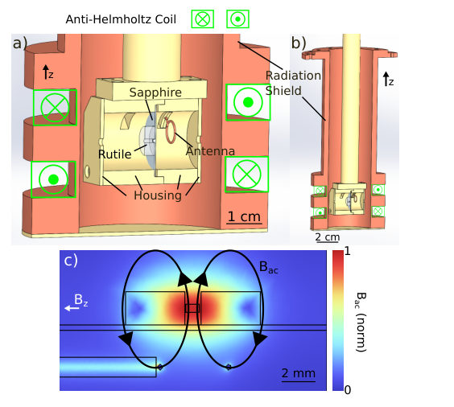
<figcaption class="paper-figure-caption"><b>Fig 2.</b> FIG. 2. (a) Anti-Helmholtz coils integrated into the tail of the still shield, inside which the dielectric resonator is housed. (b) The entire still shield tail and the device, which sit inside the superconducting vector magnet (not shown here, see the supplementary material). (c) Simulated ac magnetic-field amplitude of the resonator’s fundamen- tal mode. The direction of the ac field is indicated by the black ar- rowed circles, and the static magnetic field by Bz. The rutile crystal has an outer diameter of 8 mm, an inner diameter of 1 mm, and a height of 2 mm.</figcaption>
</figure>
<figure class="paper-figure-card">
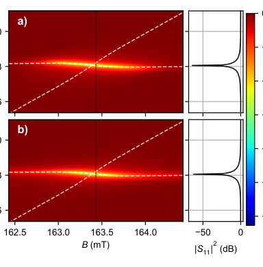
<figcaption class="paper-figure-caption"><b>Fig 3.</b> FIG. 4. Reflection spectrum as a function of probe frequency and magnetic field when a magnetic field gradient is applied such that C = 1. a) is the experimental data and b) is the fitted spectrum us- ing the fitted parameters from a). The white dashed lines are the resonance frequencies of the polaritons and the spectra on the right correspond to black vertical lines, where the spins are in resonance with the resonator.</figcaption>
</figure>
<figure class="paper-figure-card">
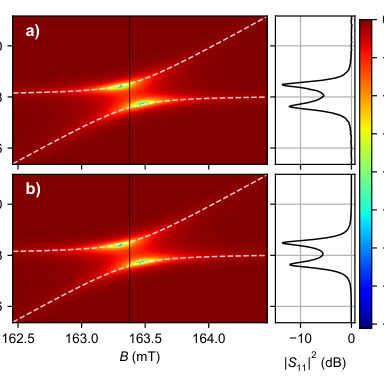
<figcaption class="paper-figure-caption"><b>Fig 4.</b> FIG. 3. Reflection spectrum as a function of probe frequency and magnetic field when no magnetic field gradient was applied, corre- sponding to the high cooperativity regime. a) is the experimental data and b) is the fitted spectrum using the fitted parameters from a). The white dashed lines are the resonance frequencies of the polaritons and the spectra on the right correspond to black vertical lines, where the spins are on resonance with the resonator.</figcaption>
</figure>
<figure class="paper-figure-card">
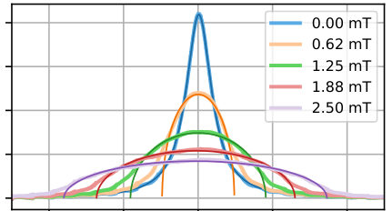
<figcaption class="paper-figure-caption"><b>Fig 5.</b> FIG. 5. Spin spectral distribution data(light) and fit(dark) for various magnetic field gradients. The legend lists ∆B, the magnetic field dif- ference on either side of the sample. The zero current data is fit to a Lorentzian function, while all the others are fit to semi-ellipses using only the data in the central region.</figcaption>
</figure>
</div>

<p><strong>Summary.</strong> The research demonstrates a novel method to control the spectral properties of a spin ensemble by applying an external magnetic field gradient. By achieving impedance matching and tuning the inhomogeneous broadening in situ, the authors show a crucial step toward realizing robust, controllable quantum memories for microwave photons.</p>
<p><strong>Why it may be interesting.</strong> This work directly addresses fundamental challenges in quantum memory: controlling decoherence sources ($\Gamma$) externally while optimizing coupling ($C=1$) for efficient photon storage/retrieval, which is central to building quantum networks.</p>
<details>
<summary>Detailed structure</summary>
<p><strong>Main problem.</strong> The primary goal is to control the spectral distribution (inhomogeneous broadening) of a spin ensemble while simultaneously achieving impedance matching with microwave photons.</p>
<p><strong>Main result.</strong> The authors successfully demonstrated tunable, in situ control over inhomogeneous broadening using a magnetic field gradient and achieved near-perfect absorption by tuning the system to impedance matching ($C=1$).</p>
<p><strong>Method.</strong> They used an anti-Helmholtz coil setup within a dilution refrigerator to apply controlled magnetic field gradients ($
abla B$) to tune the spin ensemble's spectral properties, measured via microwave spectroscopy (VNA).</p>
<p><strong>Model / system.</strong> The system involves a spin ensemble (DPPH molecules) coupled to a high-quality factor dielectric resonator. The physics is modeled using concepts from cavity QED, treating the coupling strength and linewidth ($\Gamma$) as key parameters.</p>
<p><strong>Key observables.</strong> Reflection spectrum ($|S_{11}|^2$), spectral distribution $
ho(\omega)$, Rabi oscillations (in time domain), and absorption efficiency.</p>
<p><strong>Important parameters / regimes.</strong> Inhomogeneous linewidth ($\Gamma$), Cooperativity ($C$), magnetic field gradient ($
abla B$), and coupling strength ($g_{ens}$).</p>
<p><strong>Assumptions / limitations.</strong> The analysis relies on modeling the spectral distribution as a convolution of initial broadening with gradient-induced broadening, and fitting data to specific functional forms like semi-ellipses.</p>
<p><strong>Figures summary.</strong> Figures illustrate the magnetic field cross-section generated by the anti-Helmholtz coil, the dielectric resonator setup, and show spectroscopic measurements demonstrating the collapse of Rabi oscillations as the gradient increases.</p>
<p><strong>Paper structure.</strong> The paper progresses from establishing the physical platform (dielectric resonator + spin ensemble) to detailing the control mechanism ($
abla B$ application), presenting spectral characterization results (impedance matching), and finally showing time-domain dynamics (Rabi oscillation quenching).</p>
</details>
<details>
<summary>Abstract</summary>
<p>We control the spectral distribution of a spin ensemble by applying a magnetic field gradient using an anti-Helmholtz coil inside a dilution refrigerator, and demonstrate impedance matching between the ensemble and a transmission line, achieving -50 dB absorption of incident radiation. This represents a first step toward a spin-ensemble-based quantum memory for itinerant microwave photons. We further model the spectral distribution under the applied gradient to predict the spin-resonator response, and use the device to systematically tune the weak-to-strong coupling transition in both continuous-wave and time-domain pulsed measurements.</p>
</details>
<p><sub><a href="#top">↑ back to top</a></sub></p>

<p><a id="paper-2607.10218"></a></p>
<h3 id="from-local-weight-selection-to-zeno-slowdown-in-an-open-su-schrieffer-heeger-chain-with-a-single-local-loss"><a href="http://arxiv.org/abs/2607.10218v1">From local weight selection to Zeno slowdown in an open Su-Schrieffer-Heeger chain with a single local loss</a></h3>
<p><strong>Authors:</strong> Y. T. Wang, X. Z. Zhang<br>
<strong>Type:</strong> theory · <strong>Category:</strong> other · <strong>PDF:</strong> <a href="https://arxiv.org/pdf/2607.10218v1">https://arxiv.org/pdf/2607.10218v1</a><br>
<strong>Analysis basis:</strong> full PDF text, analyzed in chunks
<strong>Topic relevance:</strong> 🔥 <code>methods for driven-dissipative</code> <strong>4/5</strong> · 🔥 <code>non-equilibrium dynamics</code> <strong>4/5</strong> · <code>analog quantum simulation</code> <strong>3/5</strong> · <code>correlated / nonlocal dissipation</code> <strong>3/5</strong> · <code>driven-dissipative phase transition</code> <strong>3/5</strong> · <code>non-equilibrium universality</code> <strong>3/5</strong> · <code>Keldysh / 2PI / non-Gaussian methods</code> <strong>2/5</strong> · <code>Kondo &amp; dissipative impurity</code> <strong>2/5</strong> · <code>scars &amp; prethermalization</code> <strong>2/5</strong> · <code>Frenkel-Kontorova</code> <strong>1/5</strong> · <code>entanglement &amp; information structure</code> <strong>1/5</strong> · <code>quantum measurements</code> <strong>1/5</strong></p>
<div class="figure-strip-hint">↔ Scroll figures horizontally</div>
<div class="paper-figures-scroll">
<figure class="paper-figure-card">
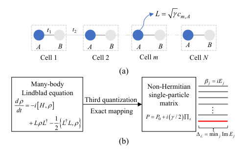
<figcaption class="paper-figure-caption"><b>Fig 1.</b> FIG. 1. Two-panel summary of the model and the exact spec- tral reduction. (a) Quantum simulation architecture and ef- fective open SSH model. A finite dimerized chain with intra- cell hopping t1 and intercell hopping t2 is coupled to a single local reservoir on the bulk A site m. The dissipative defect is described by the jump operator L = √γ cm,A. (b) Exact re- duction schematic. Third quantization produces two rapidity blocks P± = ±h + i(γ/2)Πs. Because chiral symmetry makes them isospectral, the plotted matrix P ≡P+ = P0 +i(γ/2)Πs contains all distinct eigenvalues Ej. Each Ej occurs in both blocks, so the complete rapidity multiset is β(±) j = iEj. Fermionic subset sums of these 2Ns...</figcaption>
</figure>
<figure class="paper-figure-card">
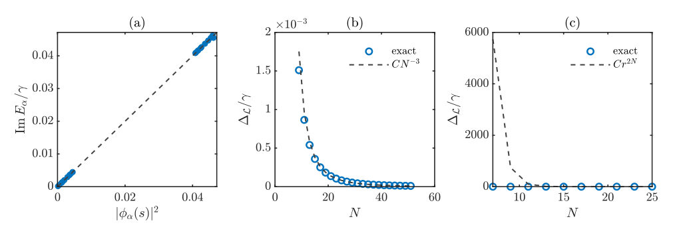
<figcaption class="paper-figure-caption"><b>Fig 2.</b> FIG. 2. Weak-loss regime. (a) For N = 21, t1 = 1.0, t2 = 0.6, m = 11, and γ = 0.05, the exact rapidity shifts satisfy Im Eα/(γ/2) ≈|ϕα(s)|2, in agreement with Eq. (46). Here |ϕα(s)|2 is the clean local spectral weight at the lossy site. (b) For a trivial chain with t1 = 1.0, t2 = 0.6, γ = 0.05, and m = (N + 1)/2, the rescaled gap 2∆L/γ follows the generic law N −3 as N is varied. Only odd sizes N = 9, 11, . . . , 51 are included, so that the dissipative site is always the central unit cell and no two points correspond to the same system size. (c) For a topological chain with t1 = 0.6, t2 = 1.0, and γ = 0.05, the rescaled gap 2∆L/γ is plotted against N for a boundary loss L = √γ c1,B. The...</figcaption>
</figure>
<figure class="paper-figure-card">
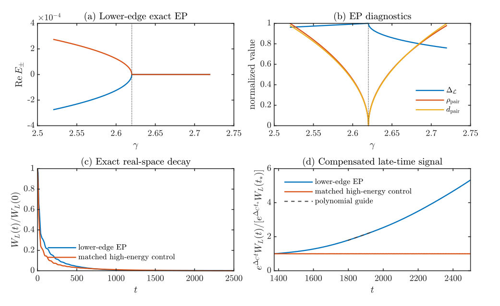
<figcaption class="paper-figure-caption"><b>Fig 3.</b> FIG. 3. Intermediate-loss regime and its real-space signature. Panels (a) and (b) diagnose an exact exceptional point reached on the real-γ axis for a chain with N = 15, t2 = 1.0, and loss on (m, A) = (8, A) at fixed t1 = 0.655. Panel (a) tracks the lower-edge rapidity pair and shows its coalescence at γEP = 2.6200. The centered-loss symmetry produces simultaneous coalescences of the other chiral-partner pairs; the displayed pair is singled out because it fixes the lower rapidity edge. Panel (b) compares the normalized quantities ∆L(γ), ρpair(γ), and dpair(γ) defined in Eqs. (74) and (73). Their simultaneous vanishing at the gap cusp establishes exact defectiveness of the tracked lower-edge...</figcaption>
</figure>
<figure class="paper-figure-card">
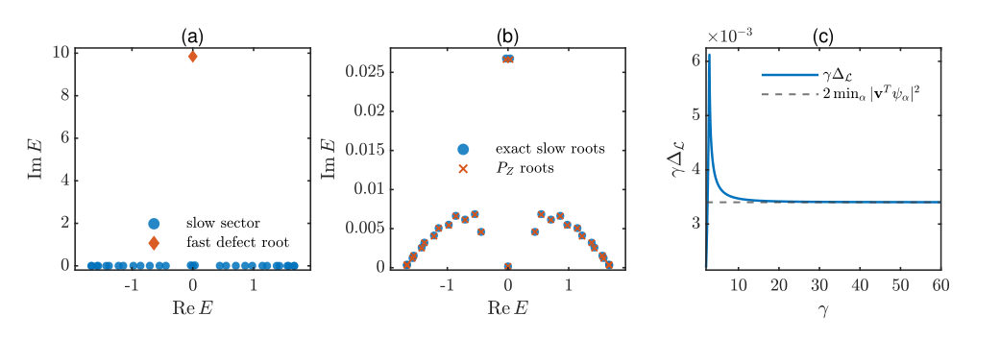
<figcaption class="paper-figure-caption"><b>Fig 4.</b> FIG. 4. Strong-loss Zeno regime for a chain with N = 15, t1 = 0.70, t2 = 1.0, and loss on (m, A) = (8, A). Panels (a) and (b) use the representative value γ = 20. (a) Exact rapidity spectrum. One ultrafast defect root is clearly separated from the remaining slow sector, in agreement with Eq. (87). (b) Comparison between the exact slow rapidities and the roots of the effective Zeno matrix PZ defined in Eq. (115). The two sets of points nearly coincide, showing that the slow sector is governed by the reduced chain with the lossy site removed. (c) Zeno scaling of the Liouvillian gap for the same geometry. The numerical data for γ∆L approach a large-γ plateau, which is equivalent to the...</figcaption>
</figure>
<figure class="paper-figure-card">
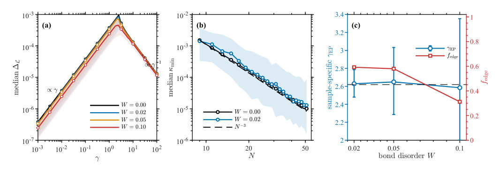
<figcaption class="paper-figure-caption"><b>Fig 5.</b> FIG. 5. Robustness against chiral-symmetry-preserving bond disorder. (a) Ensemble median of the full-space Liouvillian gap for N = 15, t1 = 0.655, t2 = 1, and loss on (m, A) = (8, A). For each nonzero W, the shaded region is the 25%–75% realization interval from 200 samples. The weak- and strong-loss guides show ∆L ∝γ and ∆L ∝γ−1, respectively. (b) Median weak-loss coefficient κmin = minα: |ϕα(s)|2&gt;0 |ϕα(s)|2 for a trivial chain with t1 = 1, t2 = 0.6, central loss, and odd N = 9, 11, . . . , 51. The finite-size statistics use 500 realizations for each displayed nonzero disorder strength; the dashed line is an N −3 guide. (c) For the geometry of panel (a), the left axis shows the median and...</figcaption>
</figure>
</div>

<p><strong>Summary.</strong> The paper analyzes the slow relaxation dynamics of an open SSH chain coupled to local particle loss. By reducing the complex many-body Lindblad problem to a solvable one-body matrix spectrum, the authors map out three distinct scaling laws ($\gamma N^{-3}$, EP behavior, $\gamma^{-1}$) that govern the decay rate based on the strength of the dissipation. This work establishes a general principle for how topology and local defects organize quantum relaxation.</p>
<p><strong>Why it may be interesting.</strong> This work provides a detailed theoretical framework showing how fundamental concepts like topology and dissipation combine to dictate long-time quantum decay rates in lattice models, which is highly relevant for understanding open quantum systems.</p>
<details>
<summary>Detailed structure</summary>
<p><strong>Main problem.</strong> The study investigates how long-time relaxation dynamics are governed by the interplay between topology, defect geometry, and local dissipation in an open Su-Schrieffer-Heeger (SSH) chain.</p>
<p><strong>Main result.</strong> Three distinct physical regimes—weak loss ($\Delta_{\mathcal L}\sim\gamma N^{-3}$), intermediate exceptional point behavior, and strong loss ($\Delta_{\mathcal L}\sim\gamma^{-1}$)—govern the slowest decay rate, demonstrating a systematic organization of relaxation mechanisms.</p>
<p><strong>Method.</strong> The many-body fermionic Lindblad problem is exactly reduced to an effective one-body non-Hermitian matrix whose rapidities generate the full Liouvillian spectrum for spectral analysis.</p>
<p><strong>Model / system.</strong> The system is a quadratic open SSH chain subjected to a single local dissipative loss channel described by a Lindblad master equation. The dynamics are analyzed using fermionic operators and mapped onto an effective one-body matrix structure.</p>
<p><strong>Key observables.</strong> The smallest positive decay rate, $\Delta_{\mathcal L}$, which sets the longest intrinsic relaxation time; also studied are local occupations and window observables.</p>
<p><strong>Important parameters / regimes.</strong> The physical loss rate ($\gamma$), system size ($N$), and the topological nature of the chain (e.g., presence of edge modes).</p>
<p><strong>Assumptions / limitations.</strong> The analysis relies on the Hamiltonian being quadratic and the loss operator being linear in fermionic operators, allowing for exact reduction to a one-body matrix problem.</p>
<p><strong>Figures summary.</strong> Figures summarize the physical setup, the spectral reduction mapping the Lindblad equation to rapidity blocks, and show robustness checks against bond disorder.</p>
<p><strong>Paper structure.</strong> The paper systematically analyzes the decay rate $\Delta_{\mathcal L}$ across three distinct loss regimes ($\gamma$ small, intermediate, large), detailing the underlying mathematical mechanism (local weight selection, exceptional point crossing, Zeno dynamics) for each regime.</p>
</details>
<details>
<summary>Abstract</summary>
<p>We study a quadratic open SSH chain with a single-site loss and show that the many-body fermionic Lindblad problem admits an exact reduction to a finite non-Hermitian one-body matrix with a rank-one imaginary impurity. Its rapidities generate the complete Liouvillian spectrum and reveal three mechanisms governing the slowest relaxation. At weak loss, decay is selected by the clean local spectral weight at the lossy site, yielding the generic law $Δ_{\mathcal L}\simγN^{-3}$ and, in the topological regime, exponentially smaller edge-controlled gaps. At intermediate loss, a centered bulk-loss geometry reaches an exact exceptional point on the real-$γ$ axis. Symmetry-related rapidity pairs coalesce simultaneously, including the pair at the lower rapidity edge. Exact real-space dynamics at this lower-edge exceptional point exhibits a polynomially enhanced exponential tail, whereas a matched high-energy control with the same parity-even one-body decay edge but no lower-edge defectiveness remains nearly exponential. At strong loss, one ultrafast defect mode separates from an active slow sector governed by a cut-chain Zeno problem, giving $Δ_{\mathcal L}\simγ^{-1}$ up to a geometry-dependent prefactor. The full finite fermionic Liouvillian spectrum, including its operator-parity sectors and subset-sum structure, is statistics-specific. By contrast, the elementary one-body decay spectrum and the three associated mechanisms are governed by a finite-dimensional linear drift matrix, so their spectral and dynamical signatures can also be accessed in bosonic and classical-wave platforms engineered to realize the same effective matrix. These results establish how topology, defect geometry, and local dissipation jointly organize long-time relaxation in an open dimerized lattice.</p>
</details>
<p><sub><a href="#top">↑ back to top</a></sub></p>

<p><a id="paper-2607.11717"></a></p>
<h3 id="interlocked-time-crystal-in-coupled-spin-12-ensembles-under-local-dissipation"><a href="http://arxiv.org/abs/2607.11717v1">Interlocked Time Crystal in Coupled Spin-1/2 Ensembles under Local Dissipation</a></h3>
<p><strong>Authors:</strong> Zhen-Huan Yang, Zhen-Tao Liang, Dan-Bo Zhang<br>
<strong>Type:</strong> theory · <strong>Category:</strong> other · <strong>PDF:</strong> <a href="https://arxiv.org/pdf/2607.11717v1">https://arxiv.org/pdf/2607.11717v1</a><br>
<strong>Analysis basis:</strong> full PDF text, analyzed in chunks
<strong>Topic relevance:</strong> 🔥 <code>analog quantum simulation</code> <strong>4/5</strong> · 🔥 <code>driven-dissipative phase transition</code> <strong>4/5</strong> · 🔥 <code>methods for driven-dissipative</code> <strong>4/5</strong> · <code>correlated / nonlocal dissipation</code> <strong>3/5</strong> · <code>exotic spin models in light-matter</code> <strong>3/5</strong> · <code>non-equilibrium dynamics</code> <strong>3/5</strong> · <code>Tavis-Cummings &amp; cavity-many-emitter</code> <strong>2/5</strong> · <code>non-equilibrium universality</code> <strong>2/5</strong> · <code>Keldysh / 2PI / non-Gaussian methods</code> <strong>1/5</strong> · <code>correlated cavity matter</code> <strong>1/5</strong> · <code>entanglement &amp; information structure</code> <strong>1/5</strong> · <code>spintronics-quantum-optics interface</code> <strong>1/5</strong></p>
<div class="figure-strip-hint">↔ Scroll figures horizontally</div>
<div class="paper-figures-scroll">
<figure class="paper-figure-card">
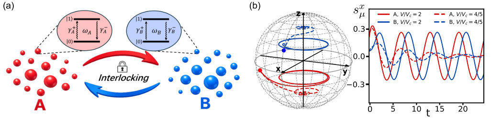
<figcaption class="paper-figure-caption"><b>Fig 1.</b> FIG. 1. Interlocked dynamics of two dissipative ensembles. (a) Schematic illustration of two coupled dissipative spin ensembles A and B with incoherent pumping γ+ µ , decay γ− µ , and bare transition frequencies ωµ. (b) Mean-field dynamics. Left: trajectories of the normalized collective spins on the Bloch sphere. Dashed (solid) curves correspond to the stationary (V &lt; Vc) [oscillatory (V &gt; Vc)] phase. Right: time evolution of the transverse spin component, showing persistent oscillations above the critical interaction strength.</figcaption>
</figure>
<figure class="paper-figure-card">
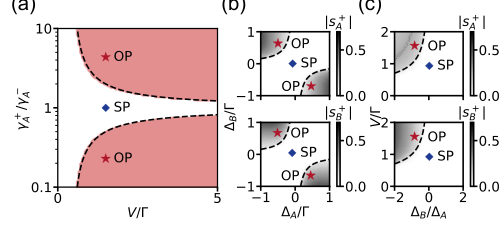
<figcaption class="paper-figure-caption"><b>Fig 2.</b> FIG. 2. Mean-field dynamical phase diagrams for the symmetric case. Phase diagrams are shown in the planes of (a) the interaction strength V/Γ and pumping ratio γ+ A/γ− A, (b) the nonequilibrium parameters ∆A/Γ and ∆B/Γ, and (c) the interaction strength V/Γ and imbalance ratio ∆B/∆A. Dashed curves denote analytical phase boundaries obtained from the stability condition. White regions correspond to |s+ A| = |s+ B| = 0, while shaded regions indicate finite transverse coherence in both ensembles.</figcaption>
</figure>
<figure class="paper-figure-card">
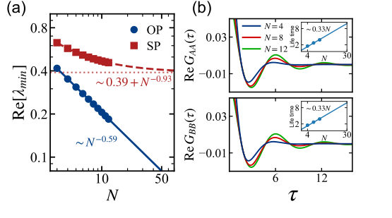
<figcaption class="paper-figure-caption"><b>Fig 3.</b> FIG. 3. Liouvillian gap and two-time correlation scaling. (a) Scaling of the decay rate −Re[λslow] in the OP and SP. The OP exhibits algebraic gap closing, while the SP approaches a finite decay rate. (b) Real parts of GAA(τ) and GBB(τ) in the OP. Insets show lifetimes extracted from exponential fits. Parameters are γ+ A = γ− B = 0.6, γ− A = γ+ B = 0.2, and V = 1.</figcaption>
</figure>
<figure class="paper-figure-card">
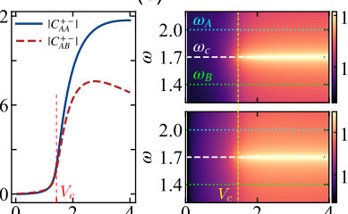
<figcaption class="paper-figure-caption"><b>Fig 4.</b> FIG. 4. Correlation signatures of the interlocked time- crystal phase from the cumulant expansion. (a) Equal-time connected correlations |C+− AA | and |C+− AB | versus V/Γ. (b) Frequency-resolved spectra PAA(ω) and PBA(ω) for ωA ̸= ωB. Vertical lines mark Vc; horizontal guide lines indicate ωA, ωB, and ωc. Calculations are performed for N = 1000.</figcaption>
</figure>
</div>

<p><strong>Summary.</strong> The authors show that coupling two dissipative spin-1/2 ensembles can generate an interlocked time crystal phase without needing complex local structures. This order arises from a collective instability requiring opposite pump-decay imbalances between the coupled units. The analysis confirms this robust, non-autonomous quantum state using advanced spectral and correlation function diagnostics.</p>
<p><strong>Why it may be interesting.</strong> This work provides a concrete, controllable mechanism for realizing complex non-equilibrium quantum phases (time crystals) using only simple two-level subsystems coupled dissipatively, which is highly relevant to engineered quantum light-matter interactions in AMO physics.</p>
<details>
<summary>Detailed structure</summary>
<p><strong>Main problem.</strong> The research addresses how to generate robust, non-autonomous time-crystalline dynamics in a composite system without increasing its local Hilbert space dimension.</p>
<p><strong>Main result.</strong> They demonstrate that coupling two simple spin-1/2 ensembles with opposite pump-decay imbalances can create a single, interlocked time crystal phase characterized by collective instability.</p>
<p><strong>Method.</strong> The analysis employs mean-field theory, stability analysis of the Liouvillian spectrum, and quantum regression theorems to diagnose long-time coherence.</p>
<p><strong>Model / system.</strong> The system consists of two coupled dissipative spin-1/2 ensembles evolving under a Lindblad master equation. The dynamics are governed by local pumping/decay rates ($\gamma_\pm^\mu$) and an inter-ensemble coupling term ($V$).</p>
<p><strong>Key observables.</strong> Mean-field order parameter, relative phase difference ($\Delta\phi$), collective oscillation frequency ($\omega_c$), Liouvillian gap closing rate, and two-time correlation functions $G_{\mu
u}( au)$.</p>
<p><strong>Important parameters / regimes.</strong> Opposite pump-decay imbalances ($\Delta_A \Delta_B < 0$) are required for the oscillatory phase; critical coupling strength ($V_c$) dictates the transition.</p>
<p><strong>Assumptions / limitations.</strong> Intra-ensemble interactions are initially neglected but later shown to only renormalize frequencies, and the analysis relies on mean-field approximations for collective variables.</p>
<p><strong>Figures summary.</strong> Figures illustrate dynamical phase diagrams showing transitions between stationary and oscillatory regimes; other figures show Liouvillian gap scaling (algebraic closing in OP vs. finite decay in SP) and spectral weight selection confirming a single collective mode $\omega_c$.</p>
<p><strong>Paper structure.</strong> The paper progresses from establishing the basic model and mean-field dynamics, to proving time-crystalline order via spectral analysis, then rigorously demonstrating the 'interlocked' nature of this order, and finally testing its robustness against detuning and noise.</p>
</details>
<details>
<summary>Abstract</summary>
<p>Multilevel dissipative systems can exploit multiple local transitions and coherence channels to generate nonstationary time-crystalline dynamics. Here we show that an analogous mechanism can be synthesized without enlarging the local Hilbert space by coupling two locally pumped and decaying spin-1/2 ensembles into a composite dissipative unit.Neither ensemble supports an autonomous oscillatory phase; instead, opposite pump-decay imbalances and inter-ensemble exchange coupling can lead to a single interlocked time crystal with a fixed internal phase relation and no single-ensemble counterpart. The time-crystalline character is consistently established through the mean-field analysis, exact calulation of Liouvillian spectra at finite size, and temporal correlations with cumulant expansion. Our work establishes a route to dissipative time-crystalline order in which coupling between simple two-level subsystems generates the effective internal structure otherwise provided by multilevel constituents.</p>
</details>
<p><sub><a href="#top">↑ back to top</a></sub></p>

<p><a id="paper-2607.10415"></a></p>
<h3 id="phase-controlled-transport-of-floquet-driven-compact-topological-photonic-states"><a href="http://arxiv.org/abs/2607.10415v1">Phase-controlled transport of Floquet-driven compact topological photonic states</a></h3>
<p><strong>Authors:</strong> Gabriel Caceres-Aravena, Paloma Vildoso, Helena Drüeke, Rodrigo A. Vicencio<br>
<strong>Type:</strong> both · <strong>Category:</strong> other · <strong>PDF:</strong> <a href="https://arxiv.org/pdf/2607.10415v1">https://arxiv.org/pdf/2607.10415v1</a><br>
<strong>Analysis basis:</strong> full PDF text, analyzed in chunks
<strong>Topic relevance:</strong> 🔥 <code>analog quantum simulation</code> <strong>4/5</strong> · 🔥 <code>non-equilibrium dynamics</code> <strong>4/5</strong> · <code>driven-dissipative phase transition</code> <strong>3/5</strong> · <code>methods for driven-dissipative</code> <strong>3/5</strong> · <code>quantum optics experiment</code> <strong>3/5</strong> · <code>QC/QI experiment</code> <strong>2/5</strong> · <code>non-equilibrium universality</code> <strong>2/5</strong> · <code>Frenkel-Kontorova</code> <strong>1/5</strong> · <code>Keldysh / 2PI / non-Gaussian methods</code> <strong>1/5</strong> · <code>correlated / nonlocal dissipation</code> <strong>1/5</strong> · <code>correlated cavity matter</code> <strong>1/5</strong> · <code>entanglement &amp; information structure</code> <strong>1/5</strong> · <code>exotic spin models in light-matter</code> <strong>1/5</strong> · <code>interference shaping light</code> <strong>1/5</strong></p>
<div class="figure-strip-hint">↔ Scroll figures horizontally</div>
<div class="paper-figures-scroll">
<figure class="paper-figure-card">
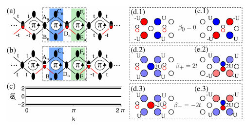
<figcaption class="paper-figure-caption"><b>Fig 1.</b> FIG. 1. (a,b) The two configurations of the diamond model. The gray rectangle highlights the unit cell. The waveguide types are: completely black for S sites and half black half red for the P sites. (c) Bloch Bands β/t. (d,e) Sketch of the FB states for the eigenvalues β = 0, 2t, and −2t. Blue and red colors represent normalized positive and negative amplitudes, respectively. The P modes are represented by half-blue-half- red colored solid circles at the center.</figcaption>
</figure>
<figure class="paper-figure-card">
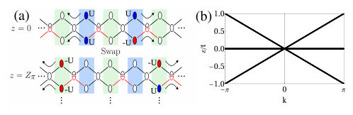
<figcaption class="paper-figure-caption"><b>Fig 2.</b> FIG. 2. (a) Two initial conditions: in phase (left) and an out of phase (right) profiles at z = 0, and their evolution after one period z = Zπ = π/(2t). Blue and red colors represent positive and negative amplitudes, respectively. (b) Floquet quasienergies ε calculated for a period Z = 2Zπ.</figcaption>
</figure>
<figure class="paper-figure-card">

<figcaption class="paper-figure-caption"><b>Fig 3.</b> Fig.2(a) shows two initial states at z = 0, one of them in phase (blue zone) and the other one out of phase (green zone). Each of these states is a linear combination of three different FB modes, and each of these states is coupled to the neighboring central waveguides. In order to understand the underlying dynamics, we first analyze how the in-phase (blue-blue) state depicted in Fig.2(a) propagates to the left. The in-phase state in the blue zone exhibits destructive interference to the right due to the P site; therefore, it does not propagate in that di- rection. However, it features constructive interference to the left when couple to the S site and, thus, it can trans- late to the next...</figcaption>
</figure>
<figure class="paper-figure-card">
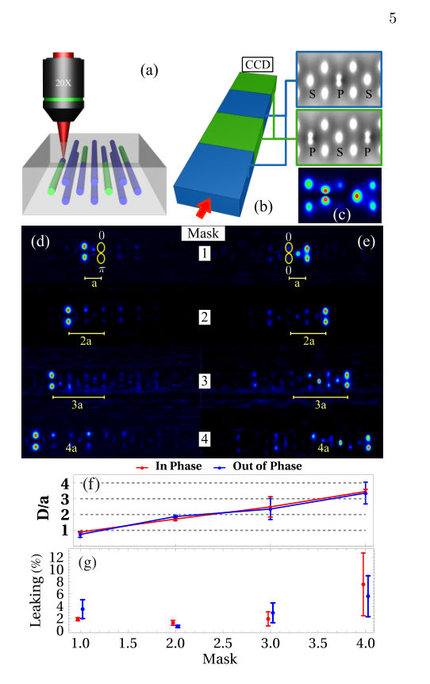
<figcaption class="paper-figure-caption"><b>Fig 4.</b> FIG. 3. (a) Sketch of the femtosecond laser writing tech- nique alternating the central waveguides between S (blue) and P (green) types. (b) The alternation of the central waveg- uides defines two different mask segments highlighted in blue and green. Insets show a bright-field microscopy image of each mask. (c) Output intensity image showing the S and P modes. (d)-(e) Intensity output at the end of each mask seg- ment {1, 2, 3, 4}, for the (d) out-of-phase initial condition and the (e) in-phase condition. (f) Normalized displacement D/a of the wave packet from its initial condition after each mask segment.(g) Percentage of leaking per mask. For (f) and (g) red (blue) dots are for the...</figcaption>
</figure>
</div>

<p><strong>Summary.</strong> The research demonstrates how to overcome the inherent localization of compact topological photonic states by employing a Floquet engineering protocol in an engineered photonic lattice. By periodically modulating the system's Hamiltonian, the authors achieve directional transport, mimicking a stroboscopic quantum walk. This work is significant for realizing controllable light-matter interactions and robust information transfer in integrated optical circuits.</p>
<p><strong>Why it may be interesting.</strong> This work provides a concrete platform (photonic waveguides) to realize and control topological phenomena previously confined to theoretical models or other physical systems. It demonstrates active control over fundamentally localized quantum states using time-periodic driving, which is highly relevant for building optical quantum circuits.</p>
<details>
<summary>Detailed structure</summary>
<p><strong>Main problem.</strong> The work addresses how to control the transport of highly localized, compact topological photonic states that are normally immobile in linear waveguides.</p>
<p><strong>Main result.</strong> By applying a Floquet driving protocol—periodically modulating the lattice Hamiltonian—the authors successfully induce directional, quantum walk-like transport of these otherwise trapped states.</p>
<p><strong>Method.</strong> The study combines theoretical analysis using Floquet theory and topological invariants (winding number) with experimental implementation using femtosecond laser written photonic waveguides.</p>
<p><strong>Model / system.</strong> The system is an all-flat band (FB) lattice realized in a diamond structure connecting S-type and P-type waveguides, which mimics the effect of an effective magnetic field via multi-orbital interactions.</p>
<p><strong>Key observables.</strong> Directional propagation confirmed by chiral pairs with winding numbers $\pm 1$, measurable discrete mobility ($D$), and low leakage fraction ($L$) during transport.</p>
<p><strong>Important parameters / regimes.</strong> The control mechanism relies on modulating the Hamiltonian along the propagation coordinate ($z$) and controlling the relative phase of the input excitation.</p>
<p><strong>Assumptions / limitations.</strong> Key assumptions include the ability to tune waveguide properties for matching band structures ($eta_S = eta_P$) and that transport can be achieved by swapping central waveguides periodically.</p>
<p><strong>Figures summary.</strong> Figures illustrate the lattice structure, Bloch bands showing flat bands, the evolution of in-phase/out-of-phase states over one period, and experimental intensity profiles demonstrating clear directional wavepacket transfer across multiple mask segments.</p>
<p><strong>Paper structure.</strong> The paper first establishes the theoretical framework using AB caging effects and FB states. It then details the Floquet driving protocol via periodic Hamiltonian modulation ($H(z)$). The core is the demonstration of controlled transport, culminating in experimental measurements of directional propagation and mobility.</p>
</details>
<details>
<summary>Abstract</summary>
<p>The Aharonov-Bohm (AB) effect remains a cornerstone of fundamental and applied physics. In this work, we utilize the AB caging effect originated from an effective magnetic field induced by multi-orbital interactions, creating an all flat band (FB) lattice system. Normally, FB states are known for being compact in space and having a zero tail; therefore, their mobility in a linear environment is generally understood as impossible. We propose a Floquet driving protocol in an all-FB photonic system to fully control the dynamics of localized photonic states. The modulation of the Hamiltonian along the propagation coordinate allows the translation of compact states in the direction of constructive interference, resulting in an effective stroboscopic quantum walk-like effect. We find that the traveling states exist in chiral pairs and have a related topological invariant (winding number) equal to +1 or -1, with the sign determining the propagation direction. We experimentally implement the Floquet driven protocol using femtosecond laser written photonic waveguides and demonstrate directional control of the propagation, determined by the relative phase of the input condition.</p>
</details>
<p><sub><a href="#top">↑ back to top</a></sub></p>

<p><a id="paper-2607.10334"></a></p>
<h3 id="static-entanglement-structure-and-adiabatic-bell-state-preparation-in-the-tripartite-quantum-rabi-model"><a href="http://arxiv.org/abs/2607.10334v1">Static entanglement structure and adiabatic Bell-state preparation in the tripartite quantum Rabi model</a></h3>
<p><strong>Authors:</strong> Li-Li Gao, Zi-Xuan Chen, Long-Jie Li, Zi-Cheng Liu, A-Long Zhou, Chuan-Cun Shu, Zi-Min Li<br>
<strong>Type:</strong> theory · <strong>Category:</strong> other · <strong>PDF:</strong> <a href="https://arxiv.org/pdf/2607.10334v1">https://arxiv.org/pdf/2607.10334v1</a><br>
<strong>Analysis basis:</strong> full PDF text, analyzed in chunks
<strong>Topic relevance:</strong> 🔥 <code>analog quantum simulation</code> <strong>4/5</strong> · 🔥 <code>entanglement &amp; information structure</code> <strong>4/5</strong> · <code>Tavis-Cummings &amp; cavity-many-emitter</code> <strong>3/5</strong> · <code>correlated cavity matter</code> <strong>3/5</strong> · <code>exotic spin models in light-matter</code> <strong>3/5</strong> · <code>spintronics-quantum-optics interface</code> <strong>3/5</strong> · <code>non-equilibrium dynamics</code> <strong>2/5</strong> · <code>Keldysh / 2PI / non-Gaussian methods</code> <strong>1/5</strong> · <code>Rydberg arrays</code> <strong>1/5</strong> · <code>driven-dissipative phase transition</code> <strong>1/5</strong> · <code>methods for driven-dissipative</code> <strong>1/5</strong></p>
<div class="figure-strip-hint">↔ Scroll figures horizontally</div>
<div class="paper-figures-scroll">
<figure class="paper-figure-card">
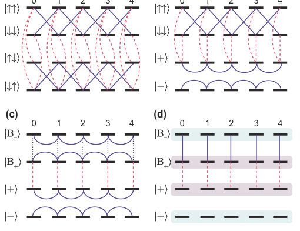
<figcaption class="paper-figure-caption"><b>Fig 1.</b> FIG. 1. Schematic organization of the TQRM coupling structure. Black horizontal segments denote oscillator lev- els. In (a)–(c), the column labels n denote bare Fock-state indices. (a) Two-qubit σz product-basis graph; purple solid links show the collective spin-oscillator term g(a + a†)σx 1σx 2, and red dashed links show the detuning-derived single-spin term ϵ(σx 1 + σx 2). (b) Reorganization of the one-excitation rows into the symmetric and antisymmetric states |+⟩and |−⟩. (c) Full Bell-basis graph, where the singlet row |−⟩is isolated and |+⟩, |B+⟩, and |B−⟩form the triplet network. The purple curved links in (c) come from the row-preserving collective spin-oscillator term, the red...</figcaption>
</figure>
<figure class="paper-figure-card">
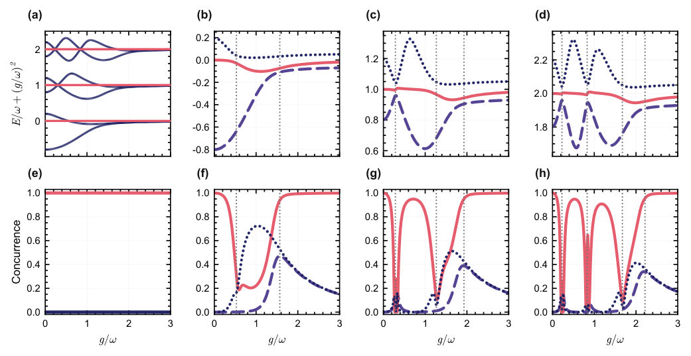
<figcaption class="paper-figure-caption"><b>Fig 2.</b> FIG. 2. Static overview of the low-energy triplet structure at Ω/ω = 0.40 and ϵ/ω = 0.03. The left column gives the zero- detuning reference. In this column, purple curves denote QRM reference branches with C = 0, while red horizontal lines denote DO reference branches with C = 1. The other columns show the finite-ϵ spectrum in the three groups labeled n = 0, 1, 2. The curves are exact tracked branches grouped by their large-g displaced-oscillator limits, whose oscillator indices give the labels n = 0, 1, 2. For each group, the upper row shows the flattened energies and the lower row shows the concurrence of the same tracked branches. In the finite-ϵ columns, purple dashed, red solid, and...</figcaption>
</figure>
<figure class="paper-figure-card">

<figcaption class="paper-figure-caption"><b>Fig 3.</b> FIG. 3. Fixed-n = 0 reference and selected exact branch at Ω/ω = 0.75 and ϵ/ω = 0.10. (a) Flattened exact spec- trum, where the red solid curve denotes the selected branch, the gray dashed curves give the corresponding ϵ = 0 refer- ence, and the shaded region marks the main avoided-crossing window. (c) Concurrence C, weak-coupling overlap Fin, and D0-reference fidelity FD0 along the selected exact branch. (b) Fixed-n = 0 effective ladder. (d) Basis weights P+, PB−, PB+, and reduced-spin concurrence CD0 of the D0 reference. The colors and markers in the lower panels follow the in-panel legends, and the vertical dotted line marks the coupling at which the selected branch is closest in energy...</figcaption>
</figure>
<figure class="paper-figure-card">

<figcaption class="paper-figure-caption"><b>Fig 4.</b> FIG. 4. Static low-to-high concurrence route and exact- tracking check of the entrance criterion in the scanned low- energy triplet window. Panels (a) and (b) schematically com- pare the normal three-level weak-coupling ordering with the inverted ordering in which EL 1,−drops below EL 0,0. In both panels, the solid curves trace the branch connections between the weak- and strong-coupling endpoints. In panel (b), the pale dashed lines show the uncoupled crossing underlying the avoided-crossing connection. Open and filled endpoint markers denote reference endpoints with two-qubit concur- rence C = 0 and C = 1, respectively. Panel (c) shows the weak-coupling endpoint reached by the branch...</figcaption>
</figure>
<figure class="paper-figure-card">

<figcaption class="paper-figure-caption"><b>Fig 5.</b> FIG. 5. Protocol-resource map for the finite-time linear- ramp benchmark in the (Ω/ω, ϵ/ω) plane. At each parameter point, the route entrance is fixed to the weak-coupling state ψL 1,− . (a) The color gives g(0.95) f /ω at parameter points where the exact branch state reaches FB−≥0.95 for at least one scanned gf. (b) The logarithmic color scale gives T (0.95)ω at parameter points where a ramp to g(0.95) f reaches FB−≥0.95 within the scanned time window. The black curve is the static entrance boundary 2 √</figcaption>
</figure>
</div>

<p><strong>Summary.</strong> The paper analyzes the tripartite quantum Rabi model to understand how entanglement evolves when two qubits interact with a shared oscillator mode. By tracking spectral changes through avoided crossings, it demonstrates that this coupling mechanism can guide the system adiabatically toward high-fidelity Bell states. The findings provide both static criteria and practical benchmarks for realizing such entangled states in physical quantum platforms.</p>
<p><strong>Why it may be interesting.</strong> This work directly addresses how collective interactions mediate quantum information transfer (entanglement) between discrete spin systems and bosonic modes, which is highly relevant to trapped ion or cavity QED platforms.</p>
<details>
<summary>Detailed structure</summary>
<p><strong>Main problem.</strong> The study investigates the static entanglement structure and the feasibility of adiabatic Bell-state preparation within the tripartite quantum Rabi model.</p>
<p><strong>Main result.</strong> The collective spin-oscillator coupling reorganizes spectral entanglement, allowing for an eigenbranch whose entanglement grows from near zero to nearly maximal values through avoided crossings. This analysis also benchmarks the required parameters for high-fidelity state preparation in finite time.</p>
<p><strong>Method.</strong> The authors analyze the system spectrum by projecting onto fixed-number oscillator states and developing effective Hamiltonians, comparing static adiabatic tracking with finite-time ramp protocols.</p>
<p><strong>Model / system.</strong> The model is the tripartite quantum Rabi model (TQRM), which couples two qubits to a bosonic mode via a collective spin-oscillator interaction. The Hamiltonian involves terms coupling spins ($\sigma_{x}^1\sigma_{x}^2$) and the oscillator ($a, a^\dagger$).</p>
<p><strong>Key observables.</strong> Two-qubit entanglement (quantified by Concurrence), Bell states fidelity, spectral entanglement structure.</p>
<p><strong>Important parameters / regimes.</strong> Detuning ($\epsilon$), coupling strength ($g$), bosonic frequency ($\omega$), and ramp time ($T$). Key regimes include the zero-detuning limit and weak/strong coupling limits.</p>
<p><strong>Assumptions / limitations.</strong> The analysis utilizes approximations such as projecting onto fixed-$n$ oscillator indices (Franck-Condon approximation) to derive effective Hamiltonians for tractability.</p>
<p><strong>Figures summary.</strong> Figures illustrate the TQRM coupling structure in different bases, show static entanglement evolution across varying couplings ($g$), and compare analytic predictions from fixed-$n$ models against exact spectral tracking results.</p>
<p><strong>Paper structure.</strong> The paper first establishes the model and analyzes its zero-detuning limit. It then develops effective Hamiltonians for the triplet sector using displaced-oscillator frames. The core analysis tracks entanglement evolution across coupling strengths, culminating in a finite-time benchmark protocol for Bell state preparation.</p>
</details>
<details>
<summary>Abstract</summary>
<p>The tripartite quantum Rabi model couples two qubits to a bosonic mode through a collective spin-oscillator interaction, providing a simple setting for studying two-qubit entanglement. In the zero-detuning limit, the triplet part of the spectrum splits into branches with zero and maximal entanglement, while the antisymmetric singlet ladder remains exactly decoupled. Within the triplet sector, finite detuning turns the crossings between these branches into avoided crossings and redistributes this entanglement. We identify an eigenbranch whose entanglement grows from nearly zero to a nearly maximal value through such avoided-crossing mixing. The weak-coupling level ordering yields a simple analytic criterion for whether this eigenbranch has a separable weak-coupling endpoint. A three-state effective model explains how the Bell-state component becomes dominant as the coupling increases. We further use a finite-time linear ramp of the collective coupling to benchmark the final coupling and ramp time required for high Bell-state fidelity. These results show how collective spin-oscillator coupling reorganizes spectral entanglement and connects static branch structure to finite-time Bell-state preparation.</p>
</details>
<p><sub><a href="#top">↑ back to top</a></sub></p>

<p><a id="paper-2607.10899"></a></p>
<h3 id="driven-quantum-stars-as-controlled-primitives-for-real-time-spin-dynamics"><a href="http://arxiv.org/abs/2607.10899v1">Driven Quantum Stars as Controlled Primitives for Real-Time Spin Dynamics</a></h3>
<p><strong>Authors:</strong> Michael Chertkov<br>
<strong>Type:</strong> theory · <strong>Category:</strong> disordered systems and neural networks · <strong>PDF:</strong> <a href="https://arxiv.org/pdf/2607.10899v1">https://arxiv.org/pdf/2607.10899v1</a><br>
<strong>Analysis basis:</strong> full PDF text, analyzed in chunks
<strong>Topic relevance:</strong> 🔥 <code>methods for driven-dissipative</code> <strong>4/5</strong> · <code>analog quantum simulation</code> <strong>3/5</strong> · <code>driven-dissipative phase transition</code> <strong>3/5</strong> · <code>exotic spin models in light-matter</code> <strong>3/5</strong> · <code>non-equilibrium dynamics</code> <strong>3/5</strong> · <code>correlated / nonlocal dissipation</code> <strong>2/5</strong> · <code>entanglement &amp; information structure</code> <strong>2/5</strong> · <code>non-equilibrium universality</code> <strong>2/5</strong> · <code>Keldysh / 2PI / non-Gaussian methods</code> <strong>1/5</strong> · <code>Tavis-Cummings &amp; cavity-many-emitter</code> <strong>1/5</strong> · <code>spintronics-quantum-optics interface</code> <strong>1/5</strong></p>
<div class="figure-strip-hint">↔ Scroll figures horizontally</div>
<div class="paper-figures-scroll">
<figure class="paper-figure-card">

<figcaption class="paper-figure-caption"><b>Fig 1.</b> Figure 1: Uniform-star diagnostic for the transition from LL-substitutable to genuinely quantum behavior. The homogeneous star has uniform couplings H = (J0/d)S0 · P c Sc – the static ho- mogeneous special case, Eq. (22) of Sec. 6.1, of the general driven star Hamiltonian defined in Eq. (4) – and a two-population leaf coherent product state (a deterministic 70%/30% split of the leaf Bloch directions between two fixed orientations). The upper panel compares the exact Schur-block return amplitude with L0 and L0+G1 for d = 32. The lower-left panel shows the branch-continuous log-error and the threshold defining the validity horizon. The lower-right panel shows that G1 extends the validity...</figcaption>
</figure>
<figure class="paper-figure-card">

<figcaption class="paper-figure-caption"><b>Fig 2.</b> Figure 2: The driven star is the algorithmic primitive. Leaf elimination converts d quantum leaves into a weak mean trajectory and a two-time influence kernel acting on the hub. On larger trees the same object becomes a directed message from a subtree to its parent.</figcaption>
</figure>
<figure class="paper-figure-card">

<figcaption class="paper-figure-caption"><b>Fig 3.</b> Fig. 2 also fixes the notation used below for the algorithmic interpretation: after elimination, a leaf or subtree contributes a scalar factor, a weak mean trajectory, and a two-time connected kernel. Throughout the paper, elimination means the exact contraction of the leaf world lines out of the amplitude (1): a quantum sum over the histories of the eliminated spins, conditioned on their coherent boundary data. It is the single-contour, fixed-boundary analogue of marginaliza- tion, performed at the amplitude level rather than at the density-matrix level – no partial trace is involved. All d leaf spins are eliminated in one step while the hub spin is retained; leaf c is summarized exactly...</figcaption>
</figure>
<figure class="paper-figure-card">

<figcaption class="paper-figure-caption"><b>Fig 4.</b> Figure 3: Summary of the method. (I) The model is the fully driven star in continuous time. (II) Leaf elimination (Lemma 1) is exact and produces continuum weak objects per leaf – a scalar, a weak mean trajectory, and a connected two-time kernel; the time grid enters only as a quadrature choice at numerical evaluation. (III) The cumulant tower is ordered by the physical model parameter 1/d, and each truncation level is itself a physical theory: L0 is the weak Landau– Lifshitz classical sector, G1 the Gaussian (noise-plus-response) influence correction; the d →∞ limit is the LL dynamics. (IV) Closing the hub against its boundary state gives the benchmark amplitude A(T); leaving it open gives...</figcaption>
</figure>
<figure class="paper-figure-card">

<figcaption class="paper-figure-caption"><b>Fig 5.</b> Figure 4: The 1/d hierarchy. L0 is a mean weak field. G1 is the first Gaussian influence correction, nonlocal in time but still assembled from one-spin objects.</figcaption>
</figure>
</div>

<p><strong>Summary.</strong> The paper introduces a novel theoretical framework to diagnose quantum advantage in real-time spin dynamics by analyzing 'quantum star' graphs. It develops an approximation hierarchy, expanding the full qubit model around a classical Landau–Lifshitz sector using graph coordination ($1/d$) as the expansion parameter. This method provides quantitative bounds on when genuine quantum interference effects become essential for describing system evolution.</p>
<p><strong>Why it may be interesting.</strong> This work provides a powerful, physically motivated diagnostic tool for quantum advantage in dynamics. For AMO/open systems researchers, the systematic $1/d$ expansion offers a controlled way to quantify when mean-field or classical approximations break down due to entanglement effects.</p>
<details>
<summary>Detailed structure</summary>
<p><strong>Main problem.</strong> The core problem is developing a rigorous diagnostic tool to determine when real-time quantum spin dynamics can be accurately approximated by classical models, such as the Landau–Lifshitz equation.</p>
<p><strong>Main result.</strong> The authors developed an expansion hierarchy based on graph coordination ($1/d$) that systematically quantifies the deviation from classical behavior, showing that quantum corrections are necessary for accurate long-time predictions.</p>
<p><strong>Method.</strong> They employ a systematic approximation hierarchy by performing exact leaf elimination on a 'quantum star' graph structure. This allows them to derive continuous-time expansions in terms of weak mean-field theories ($L_0$) and Gaussian influence corrections ($G_1$).</p>
<p><strong>Model / system.</strong> The system is a driven quantum spin star composed of one hub and $d$ leaves, modeled by a time-dependent Hamiltonian. The analysis focuses on the coherent-state return amplitude as the primary observable.</p>
<p><strong>Key observables.</strong> Coherent-state return amplitude ($A(T)$), $\log A - \log L_0$, and $\log A - \log L_0 - \Delta G_1$.</p>
<p><strong>Important parameters / regimes.</strong> Graph coordination parameter $d$ (or $1/d$), time $T$, and the ratio of quantum correction to classical approximation.</p>
<p><strong>Assumptions / limitations.</strong> The analysis uses a single forward time contour for technical simplicity, although physical observables often require the full Keldysh closed-time-path contour. The hierarchy is ordered by the physical parameter $1/d$.</p>
<p><strong>Figures summary.</strong> Figure 1 illustrates the diagnostic comparison between exact amplitude and approximations ($L_0$ vs $L_0+G_1$), showing $G_1$'s extension of validity. Figure 2 shows leaf elimination converting leaves into weak mean trajectories and two-time kernels acting on the hub.</p>
<p><strong>Paper structure.</strong> The paper establishes the quantum star as a fundamental primitive, derives an exact leaf-elimination lemma, constructs a systematic expansion hierarchy ($L_0 	o G_1$), and validates this framework by comparing it against established methods like temporal matrix-product influence-matrix baselines.</p>
</details>
<details>
<summary>Abstract</summary>
<p>Quantum advantage in real-time spin dynamics should be assessed against the strongest relevant classical substitutes, not merely against the qubit nature of the microscopic system. We develop a physics-based diagnostic for this boundary by reducing a qubit spin model to a spin-Landau--Lifshitz (LL) classical sector and organizing the residual quantum sector as controlled corrections. The control parameter is graph coordination: we study a spin star with \(d\) leaves and \(O(1/d)\) hub--leaf couplings. In its homogeneous form the star benchmarks the transition from LL-substitutable dynamics to genuinely quantum, discrete-sector interference; in its fully driven form, with time-dependent fields and bilinear couplings, it is the basic message-passing primitive for tree and loopy spin structures. For coherent-state return amplitudes we prove exact leaf elimination and derive a continuous-time \(1/d\) hierarchy. L0 is a driven one-spin weak-mean-field theory, while G1 is a Gaussian nonlocal-in-time influence correction coupling leaf two-time kernels to the hub weak two-point function. On bounded finite-time windows away from zeros of the boundary amplitudes, the hierarchy gives \(\log\mathcal A-\log\mathcal A_{\rm L0}=O(1/d)\) and \(\log\mathcal A-\log\mathcal A_{\rm L0}-Δ_{\rm G1}=O(1/d^2)\); numerical tests on fully driven anisotropic ensembles give slopes \(-1.05\) and \(-2.03\). Static, inhomogeneous, aligned, and fully driven stars provide validation rungs, and comparison with a temporal matrix-product influence-matrix baseline delineates complementary regimes. Unlike rank compression on a Trotter grid, the hierarchy is ordered by a physical parameter, formulated in continuous time, and each truncation level is itself a physical theory, with the LL sector as the high-coordination limit.</p>
</details>
<p><sub><a href="#top">↑ back to top</a></sub></p>

<p><a id="paper-2607.11137"></a></p>
<h3 id="decoherence-of-a-quantum-magneto-oscillator-effect-of-field-bath-interaction"><a href="http://arxiv.org/abs/2607.11137v1">Decoherence of a quantum magneto-oscillator: Effect of field-bath interaction</a></h3>
<p><strong>Authors:</strong> Koushik Mandal, Suraka Bhattacharjee, Supurna Sinha<br>
<strong>Type:</strong> theory · <strong>Category:</strong> other · <strong>PDF:</strong> <a href="https://arxiv.org/pdf/2607.11137v1">https://arxiv.org/pdf/2607.11137v1</a><br>
<strong>Analysis basis:</strong> full PDF text, analyzed in chunks
<strong>Topic relevance:</strong> 🔥 <code>methods for driven-dissipative</code> <strong>4/5</strong> · <code>Keldysh / 2PI / non-Gaussian methods</code> <strong>3/5</strong> · <code>correlated / nonlocal dissipation</code> <strong>3/5</strong> · <code>driven-dissipative phase transition</code> <strong>3/5</strong> · <code>non-equilibrium dynamics</code> <strong>2/5</strong> · <code>non-equilibrium universality</code> <strong>2/5</strong> · <code>spintronics-quantum-optics interface</code> <strong>2/5</strong> · <code>Kondo &amp; dissipative impurity</code> <strong>1/5</strong> · <code>analog quantum simulation</code> <strong>1/5</strong> · <code>measurement-induced transitions</code> <strong>1/5</strong> · <code>quantum measurements</code> <strong>1/5</strong></p>
<div class="figure-strip-hint">↔ Scroll figures horizontally</div>
<div class="paper-figures-scroll">
<figure class="paper-figure-card">

<figcaption class="paper-figure-caption"><b>Fig 1.</b> FIG. 1: The position auto-correlation function versus time for different values of harmonic fre- quency ω0 with ℏ= 1, ωc = 0.1, γ = 1, ˜m = 100, Ω= 0.1 : (i) λ = 10; (ii) λ = 100.</figcaption>
</figure>
<figure class="paper-figure-card">

<figcaption class="paper-figure-caption"><b>Fig 2.</b> FIG. 2: The position-velocity correlation function versus time for different values of harmonic frequency ω0 with ℏ= 1, ωc = 0.1, γ = 1, ˜m = 100, Ω= 0.1 : (i) λ = 10; (ii) λ = 100.</figcaption>
</figure>
<figure class="paper-figure-card">

<figcaption class="paper-figure-caption"><b>Fig 3.</b> FIG. 3: The velocity auto-correlation function versus time for different values of harmonic frequency ω0 with ℏ= 1, ωc = 0.1, γ = 1, ˜m = 100, Ω= 0.1 : (i) λ = 10; (ii) λ = 100.</figcaption>
</figure>
<figure class="paper-figure-card">

<figcaption class="paper-figure-caption"><b>Fig 4.</b> FIG. 4: The reduced density matrix (ρ/ρ0) versus time for different values of the harmonic fre- quency ω0, tuning parameter λ and temperature scale Ωwith ℏ= 1, ωc = 0.1, γ = 1, ˜m = 100.</figcaption>
</figure>
<figure class="paper-figure-card">

<figcaption class="paper-figure-caption"><b>Fig 5.</b> FIG. 5: Proposed experimental set up: Our proposed experimental setup for a CMO in a Penning trap subjected to an additional field-bath interaction. The counter-propagating laser beams are used to cool the trapped ions and to provide optical molasses. An externally applied magnetic field is applied in the z-direction, as shown in the figure. The field-bath interaction is shown in the inset.</figcaption>
</figure>
</div>

<p><strong>Summary.</strong> The paper models the decoherence of a charged magneto-oscillator coupled to an environment bath. By incorporating an additional field-bath interaction term, the authors show that this coupling enhances the rate at which quantum coherence decays. The results provide explicit predictions for correlation functions and suggest experimental methods using trapped ions to test these findings.</p>
<p><strong>Why it may be interesting.</strong> This work directly addresses open quantum systems dynamics in a controlled physical setting (CMO), providing quantitative predictions for how engineered environmental coupling ($\lambda$) can be used to control or enhance decoherence, which is central to understanding quantum technologies.</p>
<details>
<summary>Detailed structure</summary>
<p><strong>Main problem.</strong> The study investigates the quantum dissipative dynamics (decoherence) of a charged magneto-oscillator coupled to a heat bath, specifically analyzing the influence of an additional field-bath interaction.</p>
<p><strong>Main result.</strong> The field-bath coupling enhances the decoherence rate by altering the dissipative response of the environment, leading to modified correlation functions and density matrix decay.</p>
<p><strong>Method.</strong> The dynamics are analyzed using the generalized quantum Langevin equation (QLE) approach, derived from a non-Markovian master equation formalism.</p>
<p><strong>Model / system.</strong> The system is a charged magneto-oscillator (CMO) confined in a harmonic potential and coupled to an environment bath of harmonic oscillators. The coupling includes an additional term parameterized by $\lambda$ that modifies the effective spring constant.</p>
<p><strong>Key observables.</strong> Position autocorrelation, position-velocity correlation, velocity autocorrelation functions, and the decay rate of the reduced density matrix (coherence).</p>
<p><strong>Important parameters / regimes.</strong> The field-bath coupling parameter ($\lambda$), the system frequency ($\omega_0$), and the cyclotron frequency ($\omega_c$).</p>
<p><strong>Assumptions / limitations.</strong> The analysis relies on deriving equations of motion via the QLE, assuming weak coupling (Born approximation), and using non-Markovian master equation techniques.</p>
<p><strong>Figures summary.</strong> Figures illustrate the time evolution of correlation functions (position, velocity) and the reduced density matrix ($
ho/
ho_0$) for varying field-bath coupling strengths ($\lambda$), showing enhanced damping with increasing $\lambda$.</p>
<p><strong>Paper structure.</strong> The paper develops the Hamiltonian incorporating the field-bath interaction, derives the generalized quantum Langevin equation and non-Markovian master equation, analyzes the resulting correlation functions and decoherence rates, and concludes with an experimental proposal.</p>
</details>
<details>
<summary>Abstract</summary>
<p>We investigate the quantum dissipative dynamics of a charged magneto-oscillator(CMO) coupled to a heat bath of harmonic oscillators in the presence of an additional field-bath interaction. The problem is formulated within the framework of the generalized quantum Langevin equation, where the external confining potential modifies the random force correlations and the memory kernel of the environment, and the effective spring constant. Using the corresponding non-Markovian master equation, we examine the influence of the field-bath coupling on the temporal decay of the reduced density matrix of the system. We show that the additional interaction leads to an enhancement of the decoherence rate by altering the dissipative response of the bath. Thus our results shed light on the role of field-bath coupling in the quantum to classical transition of a CMO. The resulting fluctuation-dissipation relation is analyzed, and the position autocorrelation, position-velocity correlation and velocity autocorrelation are obtained explicitly. The dependence of these experimentally accessible quantities on the field-bath coupling parameter is discussed. We outline an experimental proposal for testing our theoretical predictions. The study sheds light on reservoir engineering which is central to quantum technologies.</p>
</details>
<p><sub><a href="#top">↑ back to top</a></sub></p>

<p><a id="paper-2607.11516"></a></p>
<h3 id="quantum-simulation-of-strongly-correlated-fermion-phonon-models-in-circuit-qed"><a href="http://arxiv.org/abs/2607.11516v1">Quantum Simulation of Strongly Correlated Fermion-Phonon Models in Circuit QED</a></h3>
<p><strong>Authors:</strong> Tim Bode, Riccardo Roma, Stefan Schmitz, Alessandro Ciani, Dmitriy S. Shapiro, Dmitry Bagrets, Frank K. Wilhelm<br>
<strong>Type:</strong> both · <strong>Category:</strong> strongly correlated electrons · <strong>PDF:</strong> <a href="https://arxiv.org/pdf/2607.11516v1">https://arxiv.org/pdf/2607.11516v1</a><br>
<strong>Analysis basis:</strong> full PDF text, analyzed in chunks
<strong>Topic relevance:</strong> 🔥 <code>analog quantum simulation</code> <strong>4/5</strong> · <code>QC/QI experiment</code> <strong>3/5</strong> · <code>correlated cavity matter</code> <strong>3/5</strong> · <code>driven-dissipative phase transition</code> <strong>2/5</strong> · <code>methods for driven-dissipative</code> <strong>2/5</strong> · <code>quantum optics experiment</code> <strong>2/5</strong> · <code>Kondo &amp; dissipative impurity</code> <strong>1/5</strong> · <code>Tavis-Cummings &amp; cavity-many-emitter</code> <strong>1/5</strong> · <code>entanglement &amp; information structure</code> <strong>1/5</strong> · <code>exotic spin models in light-matter</code> <strong>1/5</strong> · <code>non-equilibrium dynamics</code> <strong>1/5</strong> · <code>spintronics-quantum-optics interface</code> <strong>1/5</strong></p>
<div class="figure-strip-hint">↔ Scroll figures horizontally</div>
<div class="paper-figures-scroll">
<figure class="paper-figure-card">

<figcaption class="paper-figure-caption"><b>Fig 1.</b> FIG. 1. Circuit diagram for the Rabi gate ˆSR(tp +τ, tp) introduced in eq. (21). The phases in Z-rotations are φq = ω0(tp +qτ) with q = 0, 1</figcaption>
</figure>
<figure class="paper-figure-card">

<figcaption class="paper-figure-caption"><b>Fig 2.</b> FIG. 2. Equivalent electric circuit of the coupled transmon- resonator system. The transmon circuit is depicted in blue, the resonator circuit in red. The transmon and the resonator are coupled by a coupler which can be either a fixed capac- itor, another bus resonator, or a tunable coupler [22]. De- pending on the target gate set, the transmon can be either fixed-frequency with a single Josephson junction, or a flux- tunable transmon with a SQUID loop, where the external flux Φe(t) can be used to tune the fundamental frequency of the transmon.</figcaption>
</figure>
<figure class="paper-figure-card">

<figcaption class="paper-figure-caption"><b>Fig 3.</b> FIG. 3. Schematic of the pulse sequence implementing the Rabi-gate protocol in eq. (21). The tunable transmon fre- quency ωtr(t) is modulated as a function of the physical time t to realize three resonant JC gates with durations ˜τ/4, ˜τ/2, and ˜τ/4, respectively, where ˜τ denotes the total duration of the Rabi gate. The digital gates are assumed to be much faster than the JC gates. The pulse profile of ωtr(t) may in- clude additional short buffer intervals at the pulse edges to compensate for dynamical phases generated by the free evo- lution terms in eq. (26). The JC gate accumulates the phase θ = ˜g˜τ/2, where ˜g and ˜τ denote the physical qubit-resonator coupling strength and gate...</figcaption>
</figure>
<figure class="paper-figure-card">

<figcaption class="paper-figure-caption"><b>Fig 4.</b> FIG. 4. (a) Circuit diagram for implementing a single Trotter step ∼XX(ϕ)YY(ϕ) that corresponds to the hop- ping term in eq. (39) with the amplitude V ′. Here, the</figcaption>
</figure>
<figure class="paper-figure-card">

<figcaption class="paper-figure-caption"><b>Fig 5.</b> FIG. 5. (a) Circuit implementation of the gate block ˆSZ,(i,σ) corresponding to the electron-phonon interaction on lattice site (i, σ). A sequence of SWAP gates transfers the quantum state of qubit (i, σ) to the terminal qubit (N, ↓), which is di- rectly coupled to the resonator. The inverse SWAP sequence restores the original qubit ordering after the interaction. The Rabi gate ˆSR(tp + τ, tp) is implemented according to eq. (21) with phase θ = −g0τ/2. The surrounding Hadamard gates ro- tate the interaction from the ˆZ basis of the electron-phonon coupling to the ˆ X basis required by the Rabi gate. (b) Cir- cuit diagram for the gate ˆSXY,(i,σ) (42) representing phonon- assisted hopping...</figcaption>
</figure>
</div>

<p><strong>Summary.</strong> This paper details a novel digital-analog approach to simulate complex fermion-phonon systems, like the Hubbard-Holstein model, using Circuit QED. By encoding fermions in qubits and bosons directly in resonators, they construct a fundamental Rabi gate that emulates strong electron-phonon coupling. This allows for probing exotic physics regimes relevant to correlated materials on superconducting quantum hardware.</p>
<p><strong>Why it may be interesting.</strong> This work is highly relevant as it bridges advanced quantum simulation techniques (Circuit QED) with challenging condensed matter physics problems (electron-phonon coupling), providing a concrete roadmap for near-term hardware implementation of strongly correlated models.</p>
<details>
<summary>Detailed structure</summary>
<p><strong>Main problem.</strong> The primary goal is the quantum simulation of strongly correlated fermion-phonon models, such as the Hubbard-Holstein and Yukawa-SYK models.</p>
<p><strong>Main result.</strong> The authors successfully construct quantum circuits for these complex models using a digital-analog circuit QED architecture, demonstrating how to probe nonclassical phonon physics and chaos signatures.</p>
<p><strong>Method.</strong> They employ a hybrid digital-analog approach where fermions are on transmon qubits and bosons are mapped directly onto microwave resonators. The core technique involves realizing the electron-phonon coupling via a tailored qubit-resonator Rabi gate.</p>
<p><strong>Model / system.</strong> The system models include electron-phonon interactions (Hubbard-Holstein) and phonon-mediated interactions among Majorana fermions (Yukawa-SYK). The physical platform is Circuit QED, utilizing transmon qubits coupled to microwave resonators.</p>
<p><strong>Key observables.</strong> Nonclassical phonon physics signatures, quantum chaos indicators (spectral statistics), and ground state properties via variational ansatz.</p>
<p><strong>Important parameters / regimes.</strong> The simulation relies on controlling gate parameters like displacement amplitudes ($\varphi$) and interaction phases ($   heta$), as well as operating in both dispersive and resonant regimes of the circuit QED setup.</p>
<p><strong>Assumptions / limitations.</strong> The approach circumvents costly finite-dimensional encoding for bosons by using the resonator's physical Hilbert space. The Rabi gate implementation relies on Trotter decomposition approximations (first or second order).</p>
<p><strong>Figures summary.</strong> Figures illustrate the pulse sequence implementing the fundamental Rabi gate protocol and show the electric circuit diagram of the coupled transmon-resonator system.</p>
<p><strong>Paper structure.</strong> The paper first establishes the need for simulating fermion-phonon models. It then details the construction of the essential qubit-resonator Rabi gate using Trotter decomposition, showing its equivalence to known gates. Finally, it applies this fundamental gate structure to build circuits for specific complex Hamiltonians like HH and Yukawa-SYK.</p>
</details>
<details>
<summary>Abstract</summary>
<p>Gate-based digital quantum simulations offer an exciting new paradigm for studying the many-body physics of strongly correlated systems. In this context, electron-phonon models are challenging for qubit-only quantum simulators, as bosonic degrees of freedom require costly finite-dimensional encodings. Here, we elaborate on an alternative approach based on a digital-analog circuit QED architecture, where fermions are encoded in transmon qubits while bosons are represented directly by microwave resonators. The central building block of this framework is a qubit-resonator Rabi gate that emulates strong electron-phonon coupling and can be implemented through a sequence of resonant Jaynes-Cummings gates interleaved with layers of single-qubit rotations. Using this Rabi gate as the fundamental unitary operation, we construct quantum circuits for the Hubbard-Holstein and Yukawa-Sachdev-Ye-Kitaev models, which describe, respectively, strongly correlated electrons coupled to phonons and phonon-mediated interactions among Majorana fermions. We further demonstrate how nonclassical phonon physics and signatures of quantum chaos in these models can be probed through circuit simulations, and develop measurement and variational protocols tailored to near-term superconducting quantum hardware.</p>
</details>
<p><sub><a href="#top">↑ back to top</a></sub></p>

<p><a id="paper-2607.10141"></a></p>
<h3 id="self-organized-quasicrystals-and-their-excitations-in-dipolar-bose-einstein-condensates-via-optical-feedback"><a href="http://arxiv.org/abs/2607.10141v1">Self-organized quasicrystals and their excitations in dipolar Bose-Einstein condensates via optical feedback</a></h3>
<p><strong>Authors:</strong> Liang-Jun He, Fabian Maucher, Yong-Chang Zhang<br>
<strong>Type:</strong> theory · <strong>Category:</strong> quantum gases · <strong>PDF:</strong> <a href="https://arxiv.org/pdf/2607.10141v1">https://arxiv.org/pdf/2607.10141v1</a><br>
<strong>Analysis basis:</strong> full PDF text, analyzed in chunks
<strong>Topic relevance:</strong> 🔥 <code>analog quantum simulation</code> <strong>4/5</strong> · <code>Keldysh / 2PI / non-Gaussian methods</code> <strong>3/5</strong> · <code>driven-dissipative phase transition</code> <strong>3/5</strong> · <code>methods for driven-dissipative</code> <strong>3/5</strong> · <code>non-equilibrium dynamics</code> <strong>2/5</strong> · <code>non-equilibrium universality</code> <strong>2/5</strong> · <code>Frenkel-Kontorova</code> <strong>1/5</strong> · <code>Tavis-Cummings &amp; cavity-many-emitter</code> <strong>1/5</strong> · <code>correlated cavity matter</code> <strong>1/5</strong> · <code>interference shaping light</code> <strong>1/5</strong> · <code>quantum measurements</code> <strong>1/5</strong></p>
<div class="figure-strip-hint">↔ Scroll figures horizontally</div>
<div class="paper-figures-scroll">
<figure class="paper-figure-card">

<figcaption class="paper-figure-caption"><b>Fig 1.</b> FIG. 1. (a) Illustration of the setup. A quasi-2D dBEC polar- ized along the z-direction is placed in front of a retroreflecting mirror at a distance d. The thickness of the dBEC is 2σz. The forward Ω+ and backward Ω−propagating optical fields off- resonantly couple the ground state to the excited states of the atoms via a V-type configuration with detunings ∆+ and ∆−, respectively. The wavelength of λ = 421nm corresponds to the transition of 164Dy from ∣j = 8, mj = −8⟩to ∣j′ = 9, m′ j = −7⟩ and ∣j′ = 9, m′ j = −9⟩, respectively (cf. [51]). (b) A Bogoli- ubov excitation spectrum for different 2D densities ρ2D at as/add = 0.75. The red line corresponds to ●in Fig. 2.</figcaption>
</figure>
<figure class="paper-figure-card">

<figcaption class="paper-figure-caption"><b>Fig 2.</b> FIG. 3. (a) The excitation spectrum and dynamic structure factor of the dodecagonal QC marked by ●in Fig. 2. (b) Enlarged view of the five gapless modes. The dynamic struc- ture factor is represented by the heat map, with a frequency broadening of 0.005ωz. Here, the momentum q is taken along x-axis.</figcaption>
</figure>
<figure class="paper-figure-card">

<figcaption class="paper-figure-caption"><b>Fig 3.</b> FIG. 2. Ground-state phase diagram as a function of ρ2D and as/add at α = −0.00148 and β = 14.69. The subgraphs present the density distributions of the four modulated states in the same colors, which are obtained using the parameters ρ2D and as/add marked by ●, ★, ⧫, and ▲, respectively. The right column displays their corresponding momentum profiles.</figcaption>
</figure>
<figure class="paper-figure-card">

<figcaption class="paper-figure-caption"><b>Fig 4.</b> FIG. 4. Dynamical evolution of the dBEC driven by the local and gradual quench [cf. Eqs. (6) and (7)] with v0 = 0.4.</figcaption>
</figure>
</div>

<p><strong>Summary.</strong> The paper theoretically investigates the formation of self-organized quasicrystals in dipolar Bose-Einstein condensates by coupling dipole interactions with engineered optical feedback. It predicts a rich phase diagram featuring dodecagonal QCs and develops advanced numerical methods to calculate their unique excitation spectra. This work demonstrates how quantum control over long-range interactions can stabilize exotic, non-periodic crystalline phases.</p>
<p><strong>Why it may be interesting.</strong> This work bridges concepts from quantum optics (optical feedback), many-body physics (BECs), and condensed matter theory (quasicrystals) to predict novel quantum phases of matter that are highly tunable via external fields.</p>
<details>
<summary>Detailed structure</summary>
<p><strong>Main problem.</strong> The primary goal is realizing and characterizing self-organized quasicrystals (QCs) within a controllable quantum system.</p>
<p><strong>Main result.</strong> The study predicts the existence of dodecagonal QC states in dipolar Bose-Einstein condensates, characterized by unique excitation spectra and finite superfluid fractions.</p>
<p><strong>Method.</strong> The research employs mean-field theory, solving the Gross-Pitaevskii Equation (GPE) reformulated in 4D momentum space using a projection method to analyze ground states and excitations.</p>
<p><strong>Model / system.</strong> The system is a quasi-2D dipolar Bose-Einstein condensate (dBEC). QC formation arises from the interplay between intrinsic dipole-dipole interactions and effective long-range oscillatory interactions generated via optical feedback.</p>
<p><strong>Key observables.</strong> Bogoliubov excitation spectrum, ground-state phase diagram showing transitions to dodecagonal QCs, superfluid fraction $f_s(r_\perp)$, and characteristic gapless modes (phasons).</p>
<p><strong>Important parameters / regimes.</strong> Interaction ratios ($a_s/a_{dd}$), condensate density ($
ho_{2D}$), detunings ($\Delta_\pm$), and the ratio of excitation momenta $ar{k}_2/ar{k}_1 	o \sqrt{2} + \sqrt{3}$.</p>
<p><strong>Assumptions / limitations.</strong> The system is treated in a quasi-2D limit using a Thomas-Fermi profile, and calculations for QCs rely on projecting the problem into 4D momentum space due to lack of translational periodicity.</p>
<p><strong>Figures summary.</strong> Figures illustrate the experimental setup (optical feedback), the ground-state phase diagram showing QC regimes, the convergence of QC peaks in momentum space towards ideal ratios, and the dynamic evolution protocol for generating QCs.</p>
<p><strong>Paper structure.</strong> The paper progresses from establishing the physical mechanism (DDI + optical feedback) to deriving the effective GPE. It then analyzes the resulting ground-state phase diagram, calculates the excitation spectrum using advanced projection methods in momentum space, and finally proposes a dynamic quench protocol for realization.</p>
</details>
<details>
<summary>Abstract</summary>
<p>Quasicrystals emerge from competing interactions with incommensurate characteristic length scales that inhibit translational periodicity. Here, we show that such multiscale interactions can be realized in a dipolar Bose-Einstein condensate through the interplay between intrinsic dipole-dipole interactions and photon-mediated interactions generated by coupling to an excited-state manifold together with a suitably engineered optical feedback. This interplay gives rise to two pronounced roton instabilities in the Bogoliubov excitation spectrum, leading to a rich ground-state phase diagram including dodecagonal quasicrystals with twelvefold rotational symmetry for experimentally realistic parameters. We further propose a protocol to access these quasicrystals dynamically and develop a general numerical framework for calculating their collective excitation spectra.</p>
</details>
<p><sub><a href="#top">↑ back to top</a></sub></p>

<p><a id="paper-2607.11206"></a></p>
<h3 id="unique-temporal-scaling-dimension-for-quantum-criticality-in-open-systems-weakly-coupled-to-environment"><a href="http://arxiv.org/abs/2607.11206v1">Unique temporal scaling dimension for quantum criticality in open systems weakly coupled to environment</a></h3>
<p><strong>Authors:</strong> Fan Zhong<br>
<strong>Type:</strong> theory · <strong>Category:</strong> statistical mechanics · <strong>PDF:</strong> <a href="https://arxiv.org/pdf/2607.11206v1">https://arxiv.org/pdf/2607.11206v1</a><br>
<strong>Analysis basis:</strong> full PDF text, analyzed in chunks
<strong>Topic relevance:</strong> 🔥 <code>driven-dissipative phase transition</code> <strong>4/5</strong> · 🔥 <code>non-equilibrium universality</code> <strong>4/5</strong> · <code>correlated / nonlocal dissipation</code> <strong>3/5</strong> · <code>methods for driven-dissipative</code> <strong>3/5</strong> · <code>non-equilibrium dynamics</code> <strong>3/5</strong> · <code>analog quantum simulation</code> <strong>2/5</strong> · <code>Keldysh / 2PI / non-Gaussian methods</code> <strong>1/5</strong> · <code>Kondo &amp; dissipative impurity</code> <strong>1/5</strong> · <code>entanglement &amp; information structure</code> <strong>1/5</strong></p>
<div class="figure-strip-hint">↔ Scroll figures horizontally</div>
<div class="paper-figures-scroll">
<figure class="paper-figure-card">

<figcaption class="paper-figure-caption"><b>Fig 1.</b> Low-resolution page preview, page 2</figcaption>
</figure>
<figure class="paper-figure-card">

<figcaption class="paper-figure-caption"><b>Fig 2.</b> Low-resolution page preview, page 3</figcaption>
</figure>
<figure class="paper-figure-card">

<figcaption class="paper-figure-caption"><b>Fig 3.</b> Low-resolution page preview, page 4</figcaption>
</figure>
<figure class="paper-figure-card">

<figcaption class="paper-figure-caption"><b>Fig 4.</b> Low-resolution page preview, page 5</figcaption>
</figure>
<figure class="paper-figure-card">

<figcaption class="paper-figure-caption"><b>Fig 5.</b> Low-resolution page preview, page 6</figcaption>
</figure>
</div>

<p><strong>Summary.</strong> This paper develops a generalized scaling theory for quantum criticality in open quantum systems coupled to an environment. It argues that the environmental coupling introduces a unique temporal renormalization group eigenvalue, fundamentally altering critical exponents beyond standard predictions. This provides a more accurate framework for analyzing non-equilibrium dynamics like those seen during rapid quenches.</p>
<p><strong>Why it may be interesting.</strong> This work directly addresses non-equilibrium dynamics in open quantum systems, which is crucial for understanding realistic physical implementations of quantum technologies or studying driven many-body physics where dissipation cannot be ignored.</p>
<details>
<summary>Detailed structure</summary>
<p><strong>Main problem.</strong> The study focuses on understanding, predicting, and controlling the real-time dynamics of quantum phase transitions (QPTs) in open quantum systems weakly coupled to a finite-temperature environment.</p>
<p><strong>Main result.</strong> The coupling introduces a distinct temporal renormalization-group eigenvalue, leading to a general scaling theory that modifies critical exponents non-perturbatively, thus altering standard Kibble-Zurek predictions.</p>
<p><strong>Method.</strong> The authors employ Renormalization-Group (RG) theory and Finite-Time Scaling (FTS) approaches to derive generalized scaling forms for critical observables.</p>
<p><strong>Model / system.</strong> The system consists of open quantum systems whose dynamics are modeled by a Lindblad equation describing coupling ($\lambda$) to an environment with spectral density $J(\omega)$. The analysis considers QPTs driven by external parameters ($g, T$).</p>
<p><strong>Key observables.</strong> Excitation density ($D$), critical exponents ($\sigma_g, \sigma_T$), and the modified time scales.</p>
<p><strong>Important parameters / regimes.</strong> Coupling constant ($\lambda$), bath spectral dimension ($s$), temperature ($T$), system size ($L$), and driving rate parameters ($R$).</p>
<p><strong>Assumptions / limitations.</strong> The standard Kibble-Zurek scaling is insufficient, necessitating a non-perturbative RG approach to account for the environmental coupling's influence on time scales.</p>
<p><strong>Figures summary.</strong> Not specified by notes; the theory derives specific FTS forms (e.g., Eq. 12) and corresponding modified exponents.</p>
<p><strong>Paper structure.</strong> The paper builds from identifying the need for a new RG eigenvalue due to environmental coupling, deriving generalized scaling forms involving multiple scaled variables, showing how this modifies standard Kibble-Zurek predictions, and discussing implications for universality classes.</p>
</details>
<details>
<summary>Abstract</summary>
<p>Probing, understanding, predicting, and controlling the real-time dynamics of quantum phase transitions in open systems are of pivotal importance to modern condensed matter physics, statistical physics, and quantum computing, among others. Here it is argued that a distinct temporal renormalization-group eigenvalue is needed for quantum criticality in open systems weakly coupled to their finite-temperature environment. This new physics enables the formulation of a general scaling theory that can accurately account for the critical properties including the specific Kibble-Zurek scaling in such open quantum systems. Remarkably, the critical exponents of time-related quantities are altered nonperturbatively regardless of how weak the coupling is, except for an Ohmic bath. Perspectives for future study are also discussed.</p>
</details>
<p><sub><a href="#top">↑ back to top</a></sub></p>

<p><a id="paper-2607.11877"></a></p>
<h3 id="slow-is-fast-raising-barriers-to-accelerate-thermal-relaxation"><a href="http://arxiv.org/abs/2607.11877v1">Slow is fast: raising barriers to accelerate thermal relaxation</a></h3>
<p><strong>Authors:</strong> Yubo Wang, Zhiyue Lu<br>
<strong>Type:</strong> theory · <strong>Category:</strong> statistical mechanics · <strong>PDF:</strong> <a href="https://arxiv.org/pdf/2607.11877v1">https://arxiv.org/pdf/2607.11877v1</a><br>
<strong>Analysis basis:</strong> full PDF text, analyzed in chunks
<strong>Topic relevance:</strong> 🔥 <code>non-equilibrium dynamics</code> <strong>4/5</strong> · <code>correlated / nonlocal dissipation</code> <strong>3/5</strong> · <code>methods for driven-dissipative</code> <strong>3/5</strong> · <code>non-equilibrium universality</code> <strong>3/5</strong> · <code>Keldysh / 2PI / non-Gaussian methods</code> <strong>2/5</strong> · <code>analog quantum simulation</code> <strong>2/5</strong> · <code>driven-dissipative phase transition</code> <strong>2/5</strong> · <code>entanglement &amp; information structure</code> <strong>1/5</strong> · <code>scars &amp; prethermalization</code> <strong>1/5</strong></p>
<div class="figure-strip-hint">↔ Scroll figures horizontally</div>
<div class="paper-figures-scroll">
<figure class="paper-figure-card">

<figcaption class="paper-figure-caption"><b>Fig 1.</b> FIG. 1. Barrier scheduling outperforms the pointwise extremes. (a) Six-state reversible network; barrier control changes the conductances while leaving π fixed. (b) Acceleration at ymin e = 0.05 and T = 2.2. Although all-open maximizes the instantaneous decay rate at every fixed state, timed gating reduces the terminal χ2 by factors of 130 and 7.05 relative to all-open and the best-found static landscape, respectively. The shaded interval marks the nonmonotone reversal shown in panel (c). (c) Acceleration gate schedule. Edge e2 is opened, driven to the high-barrier extreme, and reopened, producing an explicit counter-gate rather than a monotone approach to all-open. The orange box...</figcaption>
</figure>
<figure class="paper-figure-card">

<figcaption class="paper-figure-caption"><b>Fig 2.</b> FIG. 2. Same kinetic dose, opposite outcomes: relaxation is set by the order of gating. Each protocol of Fig. 1 is reordered by permuting its stages while keeping every stage’s gates and duration fixed, so all orderings share identical integrated apertures R T 0 ye dt and differ only in time order. (a) Acceleration: the displayed order gives the smallest terminal residual and the full reversal the largest among all 5! = 120 permutations, a ratio of 572 between the largest and smallest χ2(T). (b) Delay: the forward order gives the largest residual and the reverse order the smallest among all 3! = 6 permutations, a ratio of 3569. Dashed, dotted, and dash-dotted lines mark the corresponding...</figcaption>
</figure>
</div>

<p><strong>Summary.</strong> The paper investigates non-equilibrium control by scheduling kinetic barriers during system relaxation. It shows that the intuitive fastest strategy (all gates open) is suboptimal because it ignores the time ordering of underlying physical processes. Optimal acceleration requires a counter-intuitive 'counter-gating' schedule, proving that the noncommutativity of the relaxation generators is key to achieving speedups.</p>
<p><strong>Why it may be interesting.</strong> This work provides a powerful theoretical framework for understanding how temporal ordering of microscopic processes (like opening/closing gates) can fundamentally alter macroscopic relaxation dynamics, which has implications for quantum thermalization and energy transport in complex systems.</p>
<details>
<summary>Detailed structure</summary>
<p><strong>Main problem.</strong> To determine how dynamically scheduling kinetic barriers during relaxation can accelerate or slow down the approach to equilibrium without performing external work.</p>
<p><strong>Main result.</strong> Optimal schedules require non-commuting time ordering of barrier control, enabling 'counter-gating' (transiently raising some barriers) to achieve faster relaxation than simply keeping all gates open.</p>
<p><strong>Method.</strong> The analysis uses optimal control theory (Pontryagin's principle) applied to the evolution governed by a time-dependent Lindblad/Master equation, analyzing the terminal distance using f-divergences like $\chi^2$.</p>
<p><strong>Model / system.</strong> A reversible system relaxing to equilibrium described by a connected graph of states. The dynamics are controlled by modulating kinetic barriers $B_e(t)$ via time-dependent conductances $g_e(t) = \exp[-eta B_e(t)]$.</p>
<p><strong>Key observables.</strong> Terminal distance from equilibrium ($\chi^2(T)$), relaxation eigenvalues ($\gamma_a$), and the entropy production rate $\sigma(t)$.</p>
<p><strong>Important parameters / regimes.</strong> The control schedule $\{y_e(t)\}$, which dictates barrier heights, and the finite time $T$ at which the measurement is taken.</p>
<p><strong>Assumptions / limitations.</strong> The analysis assumes that the modulation of barriers is slow compared to fast intrawell equilibration; it also relies on the system being reversible and having fixed initial/final states (no work done).</p>
<p><strong>Figures summary.</strong> Figures compare relaxation performance ($\chi^2(T)$) for various protocols, showing that time-ordered gating significantly outperforms static 'all-open' or 'all-high' controls.</p>
<p><strong>Paper structure.</strong> The paper establishes the benchmark (all-open gates), introduces the finite-time optimization problem using control theory, derives necessary conditions via Pontryagin's principle, and proves that noncommutativity is essential for achieving acceleration through counter-gating.</p>
</details>
<details>
<summary>Abstract</summary>
<p>For a reversible system relaxing to equilibrium, the obvious fastest strategy is to lower all kinetic barriers (open all gates). We find that such intuition holds at three levels: the all-open-gate strategy achieves the highest local conductance, it maximizes the instantaneous speed of approach in every $f$-divergence, and it simultaneously maximizes all relaxation eigenvalues. Nevertheless, we show that a counter-intuitive finite-time optimum lies beyond this intuition and operates at a fourth level, invisible to all three: eigenvector rotation. Noncommutativity enables timed schedules to reproject residual amplitudes across relaxation modes, thereby achieving faster relaxation. Optimal schedules are bang--bang. In our illustrative example, the best-found schedule also employs counter-gating, transiently raising selected barriers, and reduces the terminal residual by a factor of $130$ relative to all-open, and by $7$ relative to the best static landscape. A no-go theorem shows that noncommutativity is necessary: commuting generators collapse every schedule to a static time-averaged landscape, worse than the intuitive static control. In the reverse problem, the dual schedule preserves nonequilibrium free energy far more effectively than intuitively keeping all barriers at maximum heights. Whether accelerating or delaying relaxation, barrier control performs no work on the reduced Markov system; it only re-times a fixed total dissipation budget.</p>
</details>
<p><sub><a href="#top">↑ back to top</a></sub></p>

<p><a id="paper-2607.11647"></a></p>
<h3 id="anomalous-dissipation-in-current-biased-josephson-systems"><a href="http://arxiv.org/abs/2607.11647v1">Anomalous Dissipation in Current Biased Josephson Systems</a></h3>
<p><strong>Authors:</strong> Johannes Hauff, Niklas Gaiser, Joachim Ankerhold, Dominik Maile<br>
<strong>Type:</strong> theory · <strong>Category:</strong> other · <strong>PDF:</strong> <a href="https://arxiv.org/pdf/2607.11647v1">https://arxiv.org/pdf/2607.11647v1</a><br>
<strong>Analysis basis:</strong> full PDF text, analyzed in chunks
<strong>Topic relevance:</strong> 🔥 <code>methods for driven-dissipative</code> <strong>4/5</strong> · <code>Keldysh / 2PI / non-Gaussian methods</code> <strong>3/5</strong> · <code>correlated / nonlocal dissipation</code> <strong>3/5</strong> · <code>driven-dissipative phase transition</code> <strong>3/5</strong> · <code>non-equilibrium dynamics</code> <strong>2/5</strong> · <code>non-equilibrium universality</code> <strong>2/5</strong> · <code>Kondo &amp; dissipative impurity</code> <strong>1/5</strong> · <code>measurement-induced transitions</code> <strong>1/5</strong> · <code>quantum measurements</code> <strong>1/5</strong></p>
<div class="figure-strip-hint">↔ Scroll figures horizontally</div>
<div class="paper-figures-scroll">
<figure class="paper-figure-card">

<figcaption class="paper-figure-caption"><b>Fig 1.</b> Figure 1. (a) Current-biased Josephson junction, connected in parallel to a shunt resistor RS and and to a branch containing an external capacitor C and a resistor Rg. (b) Sketch of the tilted washboard potential with the main processes analysed in the article. The fictitious phase particle is initially trapped in a metastable potential minimum. The decay rate out of this minimum Γ is enhanced by increasing Rg. The dynamics after the tunneling event yield a voltage pulse stemming from acceleration due to Rg followed by a re-trapping behaviour where Rg and RS both damp the dynamics.</figcaption>
</figure>
<figure class="paper-figure-card">

<figcaption class="paper-figure-caption"><b>Fig 2.</b> Figure 2. Two modes of dissipation in an electrical circuit described by a semi-infinite transmission line. Left: The line is coupled to the phase φ. Right: The line is coupled to the phase φ∗while the capacitor C yields a coupling between ˙φ and ˙φ∗. Both settings converge to Ohmic reservoirs in the limit M →∞.</figcaption>
</figure>
<figure class="paper-figure-card">

<figcaption class="paper-figure-caption"><b>Fig 3.</b> Figure 3. Voltage dynamics of the current biased Josephson Junction as a function of time. The particle starts at rest close to a maximum in the tilted washboard potential as we display in the inset of (c). We fix ib = 0.98 and RS = 12 Ω(γ/ωJ = 0.13). The blue lines in each plot are guides to the eye and show the results for vanishing Rg. (a) Rg = 8 Ω(τpωJ = 4.9) and (b) Rg = 17 Ω(τpωJ = 10.41): The oscillations in the voltage stemming from the washboard are strongly amplified by Rg. (c) Rg = 22 Ω(τpωJ = 13.47): The particle is first accelerated and then re-trapped in the next local minimum of the potential. This happens only due to the combined effects of Rg and RS. The symbols in the...</figcaption>
</figure>
<figure class="paper-figure-card">

<figcaption class="paper-figure-caption"><b>Fig 4.</b> Figure 4. Colour-plots indicating the deterministic running state (black areas) with finite voltage and the deterministic re- trapping regime (coloured areas) of the junction as a function of the dissipative parameters γ/ωJ and τpωJ for different values of the bias current. The colour code encodes the height of the voltage pulse across the junction before re-trapping (see Fig. 3c). (a) ib = 0.50: The particle is re-trapped for γ/ωJ →0 and finite τpωJ and vice versa. Having both environments present, the system is re-trapped for a broad parameter regime. The height of the voltage pulse before re-trapping increases with τpωJ. (b) ib = 0.9: In the depicted parameter regime phase dissipation...</figcaption>
</figure>
<figure class="paper-figure-card">

<figcaption class="paper-figure-caption"><b>Fig 5.</b> Figure 5. (a) Exact shape of the tilted washboard potential for ib = 0.98. The particle starts close to the barrier top. The dashed lines indicate the impact of the anomalous dissipation as determined by Eq. (15): φ = π maximum amplification, φ = 3π/2 sign change, φ = 2π maximum damping, φ = 5π/2 sign change. The golden dashed line shows the potential minimum (φM) adjacent to the barrier. (b) Total instantaneous energy of the particle at position φ for different values of Rg (different lines) and RS = 12 Ω. The dashed lines are guides to the eye (see (a)). (c) Zoom into the region of the first minimum with the adjacent barrier. (d) Total instantaneous energy in the barrier region for...</figcaption>
</figure>
</div>

<p><strong>Summary.</strong> This paper investigates how coupling a Josephson junction to an external circuit with anomalous dissipation modifies its quantum dynamics. It finds that this environment enhances the probability of quantum tunneling out of metastable states, leading to a unique phase diffusive regime. This framework offers a tool for engineering controlled dissipative processes in superconducting circuits.</p>
<p><strong>Why it may be interesting.</strong> This work is highly relevant for AMO/open quantum systems as it provides a general framework for engineering non-Markovian or 'anomalous' dissipative dynamics in nonlinear quantum circuits, which can be used to control tunneling and state preparation.</p>
<details>
<summary>Detailed structure</summary>
<p><strong>Main problem.</strong> The paper theoretically explores a new phase diffusive regime in current-biased Josephson junctions caused by anomalous dissipation introduced via coupling to an external circuit environment.</p>
<p><strong>Main result.</strong> Anomalous dissipation enhances the quantum escape process from metastable states, leading to a distinct phase diffusive regime characterized by enhanced tunneling followed by a short voltage pulse and high-probability re-trapping.</p>
<p><strong>Method.</strong> The analysis uses system-reservoir models, deriving and solving quantum Langevin equations for the junction dynamics, complemented by semiclassical path integral methods for calculating escape rates.</p>
<p><strong>Model / system.</strong> The system is a current-biased Josephson junction coupled in parallel to an external circuit containing resistors ($R_S$, $R_g$) and capacitors. The dynamics are governed by generalized Hamiltonian formulations incorporating dissipation terms.</p>
<p><strong>Key observables.</strong> Escape rate ($\Gamma$), voltage pulse characteristics, phase particle dynamics (diffusive regime), and correlation functions of fluctuating currents.</p>
<p><strong>Important parameters / regimes.</strong> Bias current ($I_B/I_C$), temperature (low T regimes), circuit parameters ($R_S, R_g, C$), and the ratio of thermal activation to quantum tunneling rates.</p>
<p><strong>Assumptions / limitations.</strong> The analysis relies on modeling dissipation via coupling to external circuits and employs semiclassical approximations for calculating tunneling probabilities in the presence of anomalous environments.</p>
<p><strong>Figures summary.</strong> Figures illustrate the circuit setup showing $R_S$ and an $R_g-C$ branch, sketching the tilted washboard potential, and comparing two distinct modes of dissipation (phase vs. charge coupling).</p>
<p><strong>Paper structure.</strong> The paper progresses from establishing the physical model and anomalous dissipation mechanism via Langevin equations to analyzing the quantum escape process using semiclassical methods, culminating in the identification of the novel phase diffusive regime.</p>
</details>
<details>
<summary>Abstract</summary>
<p>A new phase diffusive regime in a current biased Josephson junction is theoretically explored which originates from embedding the junction in a circuit environment with anomalous dissipation. This is realized by placing parallel to the junction a resistor in series with a capacitor such that electromagnetic fluctuations effectively couple also to the charge of the junction. This leads to rich Josephson dynamics, in particular for the switching of the junction out of a zero voltage state. Modelled as the escape process of a fictitious phase-particle out of a metastable well, a detailed study reveals that anomalous dissipation has a strong impact at low temperatures when quantum tunneling dominates against thermal activation. As a manifestation, a regime is found, where for realistic circuit parameters the quantum escape process is substantially enhanced, followed by a short voltage pulse and re-trapping with high probability. This class of circuits may be leveraged for detecting microwave photons or dissipative quantum annealing processes. In addition, the analysis provides a general framework for engineering dissipative dynamics in nonlinear systems using anomalous environments.</p>
</details>
<p><sub><a href="#top">↑ back to top</a></sub></p>

<p><a id="paper-2607.11066"></a></p>
<h3 id="finite-time-scaling-of-the-surface-special-transition-in-a-3d-classical-heisenberg-model"><a href="http://arxiv.org/abs/2607.11066v1">Finite-time Scaling of the surface special transition in a 3D classical Heisenberg model</a></h3>
<p><strong>Authors:</strong> Dongxu Liu, Zhe Wang, Shuai Yin, Zheng Yan<br>
<strong>Type:</strong> both · <strong>Category:</strong> statistical mechanics · <strong>PDF:</strong> <a href="https://arxiv.org/pdf/2607.11066v1">https://arxiv.org/pdf/2607.11066v1</a><br>
<strong>Analysis basis:</strong> full PDF text, analyzed in chunks
<strong>Topic relevance:</strong> 🔥 <code>non-equilibrium dynamics</code> <strong>4/5</strong> · 🔥 <code>non-equilibrium universality</code> <strong>4/5</strong> · <code>driven-dissipative phase transition</code> <strong>3/5</strong> · <code>methods for driven-dissipative</code> <strong>3/5</strong> · <code>analog quantum simulation</code> <strong>2/5</strong> · <code>correlated / nonlocal dissipation</code> <strong>1/5</strong> · <code>entanglement &amp; information structure</code> <strong>1/5</strong> · <code>exotic spin models in light-matter</code> <strong>1/5</strong> · <code>scars &amp; prethermalization</code> <strong>1/5</strong></p>
<div class="figure-strip-hint">↔ Scroll figures horizontally</div>
<div class="paper-figures-scroll">
<figure class="paper-figure-card">

<figcaption class="paper-figure-caption"><b>Fig 1.</b> FIG. 1. Finite-time scaling analysis of the surface order pa- rameter M 2 s during non-equilibrium heating and cooling pro- cesses. (a) Heating process: the system is driven from an ini- tial temperature T0 = 0.5 to the special transition at Tt = 1.0. The power law scaling behavior is represented by the black solid line. (b) After rescaling the x-axis and y-axis as shown in (b), a good data collapse is achieved for the non-equilibrium heating process when lower driving rate is employed. (c) Cooling process: the system is quenched from T0 = 2.0 to Tt = 1.0. Its power law scaling behavior is indicated by the black solid curve. Data collapse analysis was performed on the non-equilibrium...</figcaption>
</figure>
<figure class="paper-figure-card">

<figcaption class="paper-figure-caption"><b>Fig 2.</b> FIG. 2. This figure presents a finite-time scaling analysis of M 2 s under non-equilibrium conditions induced by quenching the surface coupling Js. Panel (a) corresponds to quenching from the ordinary transition to to the special transition, with the power-law scaling shown as a black solid curve. Panel (b) shown the data collapse for M 2 s after tunneling Js from ordi- nary transition to the special point. Panel (c) corresponds to quenching from the extraordinary-log transition to the special transition, where the power-law scaling is also represented by a black solid curve. Panel (d) shows the data collapse for M 2 s upon tuning Js from extraordinary-log transition to the spe- cial...</figcaption>
</figure>
</div>

<p><strong>Summary.</strong> This paper investigates how a 3D classical Heisenberg model behaves when driven across a surface phase transition. The authors find that the initial critical state dictates the resulting non-equilibrium scaling laws. Specifically, starting from an extraordinary-log critical point introduces a novel logarithmic correction to the standard finite-time scaling predictions.</p>
<p><strong>Why it may be interesting.</strong> While focused on classical statistical mechanics, the study of non-equilibrium dynamics and memory effects in critical systems provides foundational concepts applicable to understanding quench dynamics in quantum many-body systems or open quantum systems far from equilibrium.</p>
<details>
<summary>Detailed structure</summary>
<p><strong>Main problem.</strong> The study investigates non-equilibrium driven dynamics across a surface special phase transition in a 3D classical Heisenberg model, focusing on how the initial critical state influences scaling laws.</p>
<p><strong>Main result.</strong> When driven from an extraordinary-log critical state, the finite-time scaling relation acquires a novel logarithmic correction: $M^2_{s} \propto R^{(1+\eta_s)/r_s}[\log(LR/r_s)]^{-q}$.</p>
<p><strong>Method.</strong> The research employs Monte Carlo simulations to test four different driving protocols (temperature and surface-coupling ramps) across the transition point.</p>
<p><strong>Model / system.</strong> The system is a three-dimensional classical Heisenberg model with open boundaries, described by an interaction Hamiltonian involving bulk and surface couplings.</p>
<p><strong>Key observables.</strong> Surface order parameter mean squared ($\langle M^2_s 
angle$), which is analyzed for its scaling behavior with the driving rate ($R$).</p>
<p><strong>Important parameters / regimes.</strong> The analysis distinguishes between ordinary, special, and extraordinary-log critical states; key parameters include the driving rate $R$, system size $L$, and various anomalous dimensions ($\eta_s, r_s$).</p>
<p><strong>Assumptions / limitations.</strong> The work extends Finite-Time Scaling (FTS) theory by incorporating 'logarithmic initial-state memory' into the general scaling framework.</p>
<p><strong>Figures summary.</strong> Figure 1 illustrates the driven dynamics of $M^2_s$ for non-equilibrium heating and cooling, showing power-law scaling; other figures demonstrate data collapse across different quench protocols.</p>
<p><strong>Paper structure.</strong> The paper analyzes temperature-driven and surface-coupling ramped protocols. It first establishes standard Finite-Time Scaling (FTS) behavior for certain drives, then presents the central finding regarding the modified scaling law when starting from an extraordinary-log critical state.</p>
</details>
<details>
<summary>Abstract</summary>
<p>We investigate nonequilibrium driven dynamics across the special surface phase transition in the three-dimensional classical Heisenberg model with open boundaries, where tuning the surface coupling gives access to an extraordinary-log boundary critical state characterized by logarithmic, rather than power-law, decay of correlations. Using Monte Carlo simulations, we realize four driving protocols: temperature heating and cooling across the special transition, and surface-coupling ramps from the ordinary and extraordinary-log critical states into the special point. For temperature-driven protocols, the surface order parameter obeys a generalization of the finite-time scaling (FTS) and the Kibble-Zurek mechanism. The central finding emerges when the system is driven from the extraordinary-log critical state: the large-rate scaling relation acquires a logarithmic correction and takes the novel form $M^{2}_{s}\propto R^{(1+η_{s})/r_{s}}[\log(LR^{1/η_{s}})]^{-q}$ , where $R$ is the driving rate, $L$ the system size, $η_{s}$ the surface anomalous dimension, $r_{s}$ the scaling dimension of $R$, and $q$ the exponent governing the logarithmic boundary criticality. We demonstrate that this form follows from the general FTS framework by incorporating the logarithmic initial-state memory, and we achieve excellent data collapse over a wide range of system sizes and driving rates. Our results establish that extraordinary-log initial states alter nonequilibrium critical scaling, extending boundary FTS beyond conventional power-law initial conditions.</p>
</details>
<p><sub><a href="#top">↑ back to top</a></sub></p>
<hr>
<p>
<a href="index.html">← Index</a>
 · <a href="papers_02.html">Next →</a>
</p>
<hr>

</body>
</html>
